l'église de Saint-Grégoire-du-Vièvre Alchimie
l'église de Saint-Grégoire-du-Vièvre Alchimie (III) revu le 7 janvier 2002 Plan : Introduction 1. Le chevalier et sa cabale [la cabale - le chevalier ] - 2. Le rébus [le texte - le 8 - la faux ] - 3. les damiers - 4. la croix noire - 5. le combat des deux natures - 6. les derniers damiers - 7. les barres
verticales et la croix blanche - 8. le dernier damier - 9. les barres horizontales - conclusion Lexique cheval - source - chevalier - sirène - cheveux - tomber - schistes - Adonis - Chypre - pyrite - Innocents - terre - rébus - Bélier - Taureau - Sel - alun - cor - Lune - Azoth - lyre - trompette - arc - coupe - lanterne - flambeau - limon - harmonie - Cyniras - vierge noire - Jupiter - vieillard - bâton - javeline - chêne - Bacchus - abeilles - sommet - 8 - Gaia - premiers damiers - athanor - Rebis - crédence - mérelle - dauphins - grenade - RERE - RER - union - croissance - coagulation - agitation - croix noire - natures - feu de roue - âne - autres damiers - 7 rayons - Lion vert - accrétion - Regulus - les barres - croix blanche - pierre philosophale - Pierre de Lesseps - bibliographie - cabale - Fontaine - Pégase - mouvement - étain - crinière - dégouter - cuivre - myrrhe - distillation - alumine - écu - caducée - coeur - Cyliani - réincrudation - Innocents - terre - rébus - Bélier - Taureau - Déluge - Sel - alun - schistes - Artémis - artimon - astringent - Winterthur - ruche - Jacobins - Cybèle - Cadmus - lierre - thyrse - abeilles - Lions (deux) - sommet - Avicenne - baigneur - Cassius - Déméter - Préambule
Nous devons la connaissance de ce logis alchimique oublié à un site web remarquable qui a pour objet l'
étude de l'ésotérisme dans l'histoire de France
. Nous donnons en introduction le texte même proposé sur la page web, mais le lecteur en saura bien davantage en s'y connectant directement. Introduction
Le rébus que nous allons présenter dans cette étude n'a jamais été résolu officiellement. Toutefois, certains détails de l'énigme soulignent sa teneur alchimique, aussi sa place se trouve tout naturellement parmis les logis alchimiques dont Fulcanelli a commencé a révéler l'existence dans ses ouvrages (ainsi d'ailleurs que Grasset d'Orcet
dans ses matériaux cryptographiques). Ce rébus, très modeste en apparence, se trouve inscrit sur le mur sud de la petite église champêtre de Saint-Grégoire-du-Vièvre, dans l'Eure.
Une introduction préalable à l'environnement géographique et historique dans lequel se trouve cette église mérite toutefois d'être exposé pour mieux appréhender le rébus.
Voici à présent l'interprétation que nous donnons de ces fragments lapidaires : 1. le chevalier et sa cabale : FIGURE I 1.a)- la cabale
En alchimie, parler de cheval, c'est d'abord parler de sources ou de fontaine ... : "Mais quelle est donc cette Fontaine occulte ?" se demande Fulcanelli dans Les Mystères , p.95. Il nous indique que :
"La mythologie la nomme Libéthra et nous raconte que c’était une fontaine de Magnésie, laquelle avait, dans son voisinage, une autre source nommée la roche. Toutes deux sortaient d’une grosse roche dont la figure imitait le sein d’une femme..."
La mythologie nous enseigne que Libéthra renvoie aux Muses et à deux fontaines, celle d’Aganippé et celle d’Hippocrène. Aganippé est une source située en Béotie au pied de l’Hélicon et la légende raconte que cette source a jailli sous le sabot du cheval Pégase
dont par parenthèse l'étymologie renvoie à phgh
, source ; dans une autre acception, Aganippé est aussi l’épouse d’Acrisius et la mère de Danae. La légende raconte en bref que Danae fut enfermée dans une tour d’airain
par son père à qui un oracle avait prédit qu’il serait tué par le fils de sa fille ; Zeus se métamorphosa en pluie d’or et parvint jusqu’à la couche de Danae ; de leur union naquit Persée qui tua par accident son grand-père Acrisius. Nous parvenons ainsi à comprendre que de cette fontaine doit jaillir un composé à caractère " dur et inébranlable
". L’airain est une ancienne dénomination d’un alliage à base de cuivre mais nous doutons que cette interprétation immédiate et comme " coulant de source
" corresponde à la vérité. Voyons à présent cette autre source nommée " la roche
". De roche ou rocher, il est question aux DM, I , p.276 où Fulcanelli précise :
"Sachez aussi que notre rocher, -voilé sous la figure du dragon - laisse d’abord couler une onde obscure
, puante et vénéneuse, dont la fumée, épaisse et volatile
, est extrêmement toxique. Cette eau, qui a pour symbole le corbeau, ne peut être lavée et blanchie que par le moyen du feu..."
Pégase est aussi cité par Fulcanelli dans les DM, II
, p.119 quand il évoque le caisson 8 portant l'image d'un bouclier :
"...A moins qu'il ne préfère recourir au moyen dont se servit Bellérophon, chevauchant Pégase, pour tuer la Chimère."
De nombreux termes renvoient aussi au cheval, tels : ilex
: sorte de chêne, yeuse, chêne vert, à compléter par (s)ilex : silice et sileo : garder le silence --> (cf. Silenus = père nourricier de Bacchus) ; les silènes avaient des oreilles velues et des pieds de cheval
. Le symbolisme du chêne est le suivant : forêt de chêne se dit aesculetum qui renvoie aux acceptions suivantes : aesculatus = de chêne - aesculus = chêne rouvre, consacré à Jupiter (Zeus). Le verbe caracoler [de gyrus = cercle que l'on fait faire à un cheval
à droite, à gauche] renvoie aussi à l'hélice et à la spirale [
mouvement de va et vient]. Ce mouvement, souvent comparé au ludus puerorum ou au travail de la fileuse est fondamental pour assurer l'accrétion du métal au minéral ; celui-ci est en effet la matrice nécessaire ou semence métallique qui lui servira de support avant d'asssurer la multiplication et l'accroissement ultérieur (cf. supra pour de plus amples développements). Le cheval
est aussi appelé étalon, ce qui, par cabale et par association phonétique renvoie à tous les termes comportant la syllabe "éta" sans compter bien sûr la lettre grecque : h
. Mais la n'est pas l'intérêt principal dans le sens hermétique à attribuer à la cabale. Nous donnerions la préférence à quelque transformation magique qui, évidemment, ne saurait avoir comme origine que le mythe ou le rêve...
Le lecteur en saura donc plus dans la suite de cet exposé ; le cheval hermétique est double, d'abord par Pégase, effectivement, qui représente le Caput sophique de la Gorgone et ensuite par Déméter .
La recherche des occurrences où figurent les premières lettres de l’ étain (stannum) permet d’observer :
- st = paix ! silence ! (littéralement : chut !) ; les Adeptes imposent le silence sur les opérations et Les Mystères se terminent par "se taire" ; - stabilis = inébranlable, "d’acier" ;
- stabulatio = séjour dans l’étable (Jésus est représenté dans une étable et il n’est pas besoin d’insister sur l’importance fondamentale donnée à l’interprétation alchimique des Evangiles) ;
- stacta = essence de Myrrhe ; se rapporte aussi au dissolvant universel par l'intermédiaire de murra, qui est du spath fluor ;
- stagnalis = d’étang, renvoyant à stagno = inonder, submerger, image du déluge dont la parabole clôt les Demeures Philosophales ;
- stagninus = eau dormante (voyez le dormeur, éveillé au son de l’airain de la planche initiale du Mutus Liber et également la référence à Phrixus citée supra) ;
- stalagmius = vitriol naturel (qui tombe goutte à goutte) ;
- stalticus = astringent, à rapprocher de adstringo = serrer – resserrer (voyez la planche de L’Azoth où l’on voit le Soufre et le Mercure serrés en un nœud coulant par un monstre qui tient du dragon et du serpent, autre parabole de l’aigle –aquila = qui porte l’éclair de Jupiter- et du lion ; voyez aussi le lierre.)
Chez Fulcanelli, nous avons relevé toutes les occurrences possibles se référant à l’étain. Le titre même des Mystères des cathédrales
en est un exemple, car arcanum (mystère) renvoie à un procédé d’étamage
des métaux qui était secret et attribué aux Gaulois. Dans les DM, II,
le terme luden (laton) renvoie à Apollon et par conséquent à Jupiter. Dans les DM, II , p.242, la Justice
que symbolise le triptyque Lion-Balance-épée renvoie aussi à Jupiter. Toute référence au bronze et au cuivre renvoie aussi à l’étain et permet d’expliquer l’allusion à l’airain, par la racine aes
(airain, bronze, cuivre). Défilent alors :
la trompette (= son de l’airain, voir la gravure initiale du Mutus Liber), les travaux d’Hercule (aerumna), quelqu’un d’étranger (aerarius, signifiant aussi trésor secret, citoyen non inscrit) ce qui permet de comprendre l’allusion au mythe de Diane en Tauride (Artémis) dont je rappelle qu’elle porte un flambeau
et que son front est surmonté d’un croissant de Lune (Lune cornée). D’autres dérivés de la racine aes permettent de comprendre l’allusion au chêne si chère à N. Flamel et à Fulcanelli : aesculatum (forêt de chênes), aesculus (chêne rouvre consacré à Jupiter qui se dit aussi robur dont une autre traduction est l’olivier).
Nous attirons l'attention du lecteur sur l'importance, ici, à plus considérer l'Esprit que le Verbe ; jamais, en effet, un véritable artiste n'a nommé en langue vulgaire le sujet des Sages. Dans la section sur la matière première
, nous donnons de plus amples développements sur ce sujet.
Le cheval se retrouve également dans l'allégorie évoquant la cohobation, figurée par Fulcanelli dans Les Mystères
, p. 123 quand il analyse la planche XVIII où l'on aperçoit :
"un cavalier désarçonné se cramponnant à la crinière d'un cheval fougueux. Cette allégorie a trait à l'extraction des parties fixes , centrales
et pures, par les volatiles ou éthérées dans la dissolution philosophique."
Ici, les mots importants sont : crinière - fixe et centrale - dissolution. ¯ - La
crinière évoque au premier chef une chevelure ; les cheveux (trichitis) sont l'occasion de revenir sur certains détails d'iconographie des traités de Fulcanelli et d'E. Canseliet : rappelons-nous en effet la cheminée du grand salon de Fontenay-Le-Comte ( 1
) ; nous y trouvons deux gnomes dont les membres inférieurs sont couverts de poils longs et touffus. Dans les Deux Logis Alchimiques
d'Eugène Canseliet, on trouve aussi une allusion à la chevelure dans le chapitre La Sirène noire et enceinte ; FIGURE II il nous dit notamment :
"...la femme incarne le mercure qui, lui-même, en qualité de premier principe, correspond à l'esprit. De celui-ci, les cheveux longs sont l'image rayonnante qui établissait...l'antinomique différence entre les Gaulois
à l'abondante chevelure, et les romains, sévèrement tondus..."
C'est ici le lieu semble t-il, de nous souvenir de la Clef I
de B. Valentin où l'on voit un vieillard nu et glabre -et estropié de surcroît- effeuiller littéralement un globe, à droite de la gravure.
Nous pensons que le sous l'épithète de Sel des Philosophes (ou 1 er
Mercure) se dissimule un sel double d'aluminium et de potasse qui est de l'alun. On trouve dans l'Histoire Naturelle
de Pline l'Ancien un long passage sur les aluns dont nous extrayons ceci :
"L'alun liquide a des propriétés astringentes, durcissantes et corrosives...Une espèce d'alun solide est appelée schiston
par les Grecs : il se divise en sortes de filaments blanchâtres, d'où le nom de trichitis que certains ont préféré lui donner. il provient du minerai qui fournit aussi le cuivre -et que nous appelons chalcitis- : c'est une sorte d'exsudation de ce minerai coagulée en écume ."
On croirait presque se trouver devant un texte alchimique : la référence à l'aspect fibreux et aux filaments nous éclaire sur les occurences des textes ou de l'iconographie se rapportant à la chevelure, à la crinière, aux poils longs des gnomes de la cheminée de Fontenay-le-Comte , etc.
On peut repérer une autre allusion aux cheveux dans le chapitre consacré au Chariot à voile et son guide féminin (in DLA) FIGURE III Voici le commentaire d'E. Canseliet :
"Ici devons-nous remarquer, que, nonobstant l'impression de vitesse, la blonde et longue chevelure de la conductrice reste immobile et tombe dans son dos, jusqu'à toucher les hanches..."
Le verbe tomber renvoie à cado et cassito [d'où : cassus : vide, vain] -qui nous explique que tant de textes alchimiques commencent par des lamentations comme quoi les travaux ont été inutiles ou vains, cf. en particulier l'Hermès Dévoilé
de Cyliani- à rapprocher de casses = rets, filet de chasse, toile d'araignée et bien sûr de cassiterinus : d'étain ainsi que de cassito :
dégouter et cado (=cassito) : tomber. Mais cado veut aussi dire "dégoutter" et implique une idée de fluidité ; il se rapproche de fluere
(couler) par référence peut-être au spath fluor ( fluorine
). Le lecteur, ici, aura intérêt à reconsulter d'autres sections où nous approfondissons particulièrement ce point de science. Qu'il sache en tout cas que l'étain est une fausse piste qui cache en fait l' albâtre
des Sages qui correspond au véritable stibium de Tollius , à l'authentique antimoine saturnin d' Artephius . ¯
- La partie centrale est évoquée par Artephius ( 1 ) dont je cite le septième chapitre du Livre secret :
(7) Maintenant cette eau est une certaine substance centrale [
se situant au milieu : il s'agit peut-être d'une allusion au compas dont on trouve l'image dans l' Atalanta fugiens de M. Maier dans l'emblème XXI ; FIGURE IV l
a pointe du compas, au centre, a valeur d'axe, de pôle Nord ou de char ; par ailleurs, centrum = branche fixe du compas
] , claire comme de l’argent fin, qui doit recevoir les teintures du Soleil et de la Lune, pour qu’elles soient coagulées [ fixées
] et transformées en une terre blanche et animée. Pour cela cette eau nécessite des corps parfaits [ comprenez détachés, déliés
], pour qu’après la dissolution, elle puisse être coagulée, fixée en une terre blanche. Mais si cette solution [ dissolution
] est aussi leur coagulation, comme il s’agit de la même opération, car l’une n’est pas dissoute et l’autre est congelée, il n’y a cependant aucune autre eau qui puisse dissoudre les corps, elle ne peut être permanente [
stable, entendez ne se sublimant pas sous l'effet d'un feu puissant
] sauf si elle est de même nature que les autres corps, qui ne formeront plus qu’un seul [ corps
]. Quand, donc, vous voyez cette eau qui se coagule elle-même avec les corps dissous [ in situ
] ; soyez assurés que ce savoir, cette pratique, et le travail entier est réel et philosophique, et que vous faîtes les choses selon les règles de l’art."
Ce sel fixe, central et incombustible est tiré de l' albâtre
des Sages dont, en grec, les épithètes sont stibew et marmaroV
. C'est, en effet, par l'utilisation d'alcalis appropriés qu'on obtient facilement, aux températures de nos fourneaux, des composés bien fusibles qui peuvent se volatiliser en entier dans des vases ouverts sous l'action prolongée de Vulcain ardent. Le tout consiste à dissoudre les éléments des corps à réincruder dans du sel harmoniac sophique chargé d'un grand excès d'alcali. En dehors de ces expériences proprement alchimiques, on connait des procédés de spagyrie évoluée par lesquels on peut provoquer la précipitation de la magnésie, des chaux de cobalt et de nickel ou de fer oxydulé ; l'agent de cette « chute » qui correspond à une séparation philosophique, c'est-à-dire à l'obtention du Caput du corps, n'est autre que ce sel central et fixe que l'on tire des cavernes de la terre et dont parle Pline l'Ancien dans son histoire naturelle ; Ferdinand Hoefer, dans son
Histoire de la minéralogie, de la botanique et de la géologie
n'a pas manqué de l'évoquer. On peut, comme dernière expérience, citer l'action de ce sel sur les combinaisons martiales par la voie sèche. La chaux métallique se trouve entièrement précipitée et séparée radicalement d'avec le sel harmoniac sophique si le poids a été murement pesé. ¯
- La dissolution correspond à la putréfaction, c'est-à-dire à la disparition momentanée du 1 er
Mercure et du Soufre, dissous par le Lion vert (le dissolvant universel).
Au total : la cabale (cheval) permet de nous préciser : è
- que l'on doit utiliser un minéral qui se résoud à la façon d'une eau : c'est exactement le cas de l'alun qui se dissout et fond dans son eau de cristallisation et se déshydrate en une masse spongieuse. Un autre minerai se résoud, par fusion ignée à la façon d'une eau : c'est le spath fluor
qui n'est peut-être pas étranger au dissolvant universel ( 1 ) ; è
- que cette substance est de nature fibreuse : on la préparait autrefois à partir l'alun. Il se présente souvent en efflorescence
sur des schistes ; dans le texte de Pline, l'indication vise le sulfate de fer (mélantérite) existant à la surface de la pyrite de fer ou de la marcassite (l'une et l'autre de formule FeS 2
mais de structure cristalline différente) ; le terme de chalcitis désigne de la pyrite de cuivre (chalcopyrite : CuFeS 2
) et pourrait aussi avoir désigné la pyrite de fer. Chalcitis renvoie à l'île de Chypre ; le texte de Pline est formel sur ce point :
"L'emploi de l'alun n'est pas de moindre importance ni tellement différent : on entend par là un sel exsudé
par la terre. Il y en a aussi plusieurs espèces. A Chypre
on trouve une espèce blanche et une plutôt noire ; si la différence de coloris est faible, celle qui concerne l'utilisation est grande, car l'espèce blanche et liquide est d'usage très courant pour teindre la laine en couleur claire, tandis que la noire sert à teindre en couleurs sombres ou obscures..."
Cette pyrite de cuivre alumineuse ou chalcopyrite (=chalcitis) ne se trouvait couramment qu'à Chypre
ce qui explique les nombreux renvois de Fulcanelli au cuivre et à toute une mythologie gravitant autour de Chypre ; Cela nous ramène à l’emblème XLI de l’ Atalanta fugiens
et dévoile un peu mieux la nature hermétique du sanglier : FIGURE V
Qu'est-ce que le sanglier a à voir avec Chypre ? La légende d’Adonis
. Elle retrace le passage de la pierre au blanc à la pierre au rouge. Adonis est le fils de Cinyras, roi de Chypre et de Myrrha, transformée en un arbre à myrrhe [
la myrrhe était autrefois employée dans la confection de vases fort chers et réputés pour leur beauté : les vases murrins, dont le composant principal est le spath fluor ].
Adonis fut blessé à l’aine par un sanglier et mourut de cette blessure. Son sang se transforma en anémone (la première -et éphémère- fleur de Printemps) tandis que le sang d’Aphrodite, venue au secours d’Adonis, qui s’était écorchée dans des ronces, colorait les roses blanches en roses rouges.
Adonis représente donc l’image de la végétation qui descend au royaume des morts ( putréfaction
ou obscurité) pour s’épanouir et fructifier ensuite. Revenons un instant aux parents d’Adonis qui symbolisent quelque synthèse : Cinyras renvoie à Chypre, qui toujours a symbolisé le cuivre ou du moins un minerai contenant du cuivre et un autre composant (île de la mer Egée où l’on honorait Vénus). C'est exactement ce qui est représenté sur l'emblème XLI. Le sanglier représente Mars qui avait voulu se venger d'Adonis. è
- en outre, la cabale (cheval) nous renseigne sur la manière d'obtenir l'extrait essentiel de l'alun, l' alumine
, par une série de distillations par lesquelles on concentre une substance : la cohobation . FIGURE VI Fulcanelli l’évoque dans Les Mystères
, p.123 en nous décrivant la planche XVIII. De quoi s'agit-il exactement ? On peut en avoir une idée en se rapportant à un ouvrage très curieux écrit à la fin du XIX e
siècle par un Adepte qui se dissimula sous le pseudonyme de Tripied : Du
Vitriol philosophique et de sa préparation
(Chamuel, Paris, 1896) donne de précieuses indications. Ainsi, au chapitre de la matière première, voici ce qu'écrit l'auteur :
"Nous aurons donc, dans ce cas un Vitriol Martial ; nous pouvons obtenir de la même façon celui de Vénus, ainsi que la véritable matière si cachée des anciens qui s'obtenait d'une
pyrite martiale alumineuse, ou plus brièvement du sulfate de fer et d' alumine
; ce que veut nous enseigner Huginus à Barma, lorsqu'il nous dit au commencement de sa Pratique : Prenez de la vraie terre bien imprégnée des rayons du soleil, de la lune et des autres astres."
Je précise immédiatement que je n'ai eu connaissance de ce texte qu'après m'être persuadé de la nature alumineuse d'une des matières premières : ce texte indique nettement de l'alun de roche (sulfate d'aluminium ou de fer). Poursuivons : plus loin, Tripied donne la manière de traiter ce sulfate d'alumine ; le texte, à la fois emprunt de modernité et surrané, rejoint de nombreux manuscrits alchimiques : "De Locques, dans son " Rudiment de Philosophie " nous donne le procédé ci-contre:
" On met le vitriol à une chaleur fort modérée, où rien ne peut monter que le phlegme
, c'est-à-dire qu'il faut avoir soin de ne pas enlever l'eau de constitution, et ce tant qu'il demeure sec comme la pierre d'éponge; on lui redonne son phlegme,
on redistille, et ce par trois fois ; à la seconde, il prend la couleur d'une belle émeraude , et à la troisième il devient blanc
comme du beurre. On corrompt cette matière au fumier, pendant quarante jours, puis on distille l'esprit doux qui vient par vénules comme l'esprit de vin, puis l'esprit acide qui distille sous forme de fumées blanches, et enfin l'huile rouge par une forte expression de feu, sans laquelle elle ne monte pas ", pages 83 et 84: 2 e
livre. En cet endroit, De Locques n'a pas été assez explicite, ce qui lui arrive, du reste, la plupart du temps. Si on le prend à la lettre et qu'on mette le vitriol tel qu'il est, à se dessécher, on n'obtiendra rien de bon, car lorsqu'on reversera le phlegme sur ledit vitriol, celui-ci ne se dissolvera point, il n'y aura par suite que la surface qui sera attaquée par les humectations et dessiccations successives, et tout le dedans de la cornue ou cucurbite restera intact. Vous aurez donc perdu votre temps et vos peines, ce qui m'est arrivé la première fois.
Au lieu que si vous dissolvez préalablement tout le vitriol en eau distillée ou eau de pluie, vous pourrez à chaque cohobation le redissoudre de nouveau, et par là broyer suffisamment la matière, pour qu'au bout de deux ou trois opérations, elle finisse par tomber en consistance de beurre ou guhr
le tout formant une pâte homogène, que vous n'aurez plus qu'à soumettre à la putréfaction."
Il ne peut s'agir, ici, que de l'alumine hydratée. Découverte par Marggraf en 1754, l' alumine
hydratée est un précipité incolore gélatineux, soluble dans les acides et dans les alcalis. L'alumine en gelée retient énergiquement les matières colorantes, pour donner des laques ; cette propriété est mise à profit pour le mordançage en teinture. D'après Tripied, à ce moment du grand oeuvre :
"C'est la seule matière qui contient à elle seule les soufres blancs et rouges
nécessaires pour la pierre. C'est là ce vitriol qui distillé soit avec le salpêtre seulement, soit avec le salpêtre et cinabre, nous donne ce menstrue
puant dont il est parlé dans la clavicule de Raymond Lulle , le trésor des trésors de Paracelse, et le composé
d'Albert le Grand, ouvrages traduits du latin en français par A. Poisson." L'expression « Soufre blanc et rouge
» définit un moment important de l'oeuvre où les deux natures métalliques sont mises en contact l'une et l'autre ; ce sont les deux extrémités du vaisseau de nature dont il faut assurer la conjonction radicale. Cette conjonction requiert une dissolution préalable qui soit complète : c'est l'ouverture des métaux par l'action du feu secret [ eau ignée ou feu aqueux
]. Cette dissolution n'est pas suffisante ; en effet, il faut des conditions de température très particulières, basées notamment sur une très lente diminution de la chaleur ; mais cela ne suffit pas encore. Restent les deux secrets dont peu de philosophes ont parlé : la sublimation du Mercure et le lien du Mercure. Nous en parlons dans la section héraldique et alchimie . 1.b)- le chevalier FIGURE VII
De ce chevalier, nous distinguons son chef, d'abord, qui ressemble étonnamment à un pétase ; ensuite, son épée , sa main tendue, un éperon étoilé
et enfin son étrange costume. Le chevalier est habituellement assimilé à l'agent igné (lance + bouclier) par lequel la terre vierge ou dragon écailleux peut être terrassé. Le griffon
est le résultat de la dissolution du dragon. Dans les DM, II
, p.274-277, Fulcanelli revient sur l’emblème du griffon et nous dit que : "[ il s’agit de
] l’un des emblèmes majeurs de la science, celui qui couvre la préparation des matières premières de l’Oeuvre...Le griffon marque le résultat de l’opération...Du combat que le chevalier, ou soufre secret, livre au soufre arsénical du vieux dragon, naît la pierre astrale , blanche, pesante, brillante
comme pur argent, et qui apparaît signée..."
Il est bien difficile de suivre l'Adepte dans cette opération ; non pas qu'il faille douter de ce que le griffon corresponde aux premières matières préparées, mais plutôt lorsqu'il assure que le chevalier est assimilable au « soufre secret ». Il y a deux Soufres dans l'oeuvre, le Soufre blanc et le Soufre rouge qui correspondent à des sels que tout chimiste a manipulé. L'action de ces sels peut s'interprêter de la façon suivante : dans l'état actuel de la science alchimique, l'opinion la plus vraisemblable consiste à regarder la dissolution sophique comme intermédiaire entre le mélange et la combinaison. On peut suivre ici le raisonnement du chimiste Berthelot
en adaptant, par cabale, ses propos à notre sujet :
"La dissolution hermétique est caractérisée par cette circonstance qu'il existe un rapport constant et défini pour chaque température entre le poids et la nature du corps dissous, c'est-à-dire ces poissons sulfureux et mercuriel du président d' Espagnet
à qui nous devons d'avoir révélé ce point de science -par d'autres appelés le Soufre blanc et le Soufre rouge
- et celui du dissolvant, c'est-à-dire du Mercure
philosophique, où le coefficient de solubilité joue un rôle des plus importants. Il définie le poids de nature
qui, de l'avis même des plus grands artistes n'est connu que de Dieu seul. Ce rapport n'est pas modifié d'une manière appréciable par la présence d'une certaine quantité d'un sel étranger
, dénué d'action chimique sur le corps dissous, et dont les philosophes s'accordent à penser qu'il s'agit du sel harmoniac sophique
. Par contre, ce coefficient de solubilité change du tout au tout avec la température ; il croît, certes si la température s'élève mais alors le lien du Mercure vient à se briser et le Compost se volatilise entièrement. Réciproquement, si la température s'abaisse, le solide vient à se déposer en un Corps neuf, entièrement réincrudé
, et la liqueur mercurielle n'en retient qu'une petite proportion, au-dessous de la croûte cristalline qui constitue le sceau vitreux
d'Hermès, et qui est formée d'une matière d'un gris verdâtre , bulleux et amorphe."
Quant au griffon, il constitue l'hiéroglyphe de l'émergence de la première matière : c'est un animal mythique qui emprunte sa tête et sa poitrine à l’aigle et au lion
le reste du corps. Il participe donc du fixe et du volatil et dans le puzzle hermétique, il prend place au 3 ème
oeuvre. Néanmoins, un griffon c'est aussi une source
. En alchimie, le griffon peut donc aussi symboliser la « source minérale
» au niveau de laquelle l'artiste vient puiser l'Eau hermétique. "Sous le nom de marmor [ marmaroV
], les Anciens comprenaient toutes les roches, quelle que fût leur couleur, susceptible de polissure, telles que le granit, le porphyre, le malachite, les calcaires compactes, etc. Plus tard ce nom reçut une signification plus restreinte : il ne s'appliquait plus qu'à ces types de calcaires
primitifs qui composent les chefs-d'oeuvre de la sculpture antique, et parmi lesquels les marbres de Paros et de Carrare
occupent le premier rang...Au marbre blanc, retiré des îles de Paros, de Naxos et de Tinos, on donnait, suivant Pline, l'épithète de lychnites
, parce que les ouvriers le travaillaient sous terre à la lumière des flambeaux."
Ainsi voit-on le symbolisme hermétique rejoindre les opérations minières ; combien de fois n'avons nous pas fait remarquer ces flambeaux, évoqués par les épithètes stibeo ou marmaroV . Cyliani ne nous dit-il pas, dans son Hermès Dévoilé
, que les deux natures métalliques étaient contenues dans deux superbes vases en cristal reposant chacun sur un piédestal du plus beau marbre de Carrara
? En grec, le marbre de Paros se traduit par lucnithV , sorte d'albâtre, à rapprocher de lucnikoV [
qui se fait à la lumière des lampes ; office du soir
]. Ne peut-on pas, enfin, envisager un rapprochement entre lucnoV [ lampe, flambeau, torche ] et lukoV [ loup
] ? Dès lors, il deviendrait possible d'imaginer, par cabale, qu'un loup puisse s'unir à une brebis, ce que le bon sens réprouve...Nous laisserons au lecteur tout loisir d'approfondir ce point de science.
Du chevalier, Fulcanelli nous parle dans Les Mystères
, p.99, quand il évoque la cuisson du compost philosophal : FIGURE VIII
"...Revêtu de l'armure, les jambes bardées de grèves et l'écu au bras, notre chevalier est campé sur la terrasse d'une forteresse..."
Il semble bien que notre chevalier protège l'athanor de la rigueur des rayons solaires...Il y a là une indication sur la véritable nature de la pierre. Que le lecteur revoie les sections sur Buffon et chimie et alchimie
: il trouvera certainement la solution de dette énigme. è Le bouclier par sa racine grecque aspiV
a la valeur d'abri. En latin, abri se dit apricus ( exposé au soleil ) auquel se rattache aperte ( clairement, à l'air libre
) ; il est assez singulier que l'on rencontre le sanglier par rapprochement phonétique puisque aper = sanglier. Cet écu
renvoie à scutum qui est un bouclier ovale et convexe puis long et creux, comme une tuile faîtière. Par extension, la tuile indique
testa = coquille, tuile, vase en terre cuite, écaille, carapace de tortue .
C'est assez d'indication quant à la substance que contient l'argile ou l'ardoise dont on fait un vase en terre cuite ou une tuile. En effet, l'ardoise ou des argiles schisteuses forment d'autres minéraux à partir desquels on peut obtenir de l'alun : les pierres alumineuses étaient empilées puis calcinées et ensuite extraites par de l'eau. è
La grève, c'est aussi une plage étendue sur une côte basse et du gros sable avec lequel on fait le mortier. Ce mortier est évoqué par Fulcanelli lorsqu'il analyse la salamandre de Lisieux [ DM, I , p .243] : "
un homme richement vêtu du pourpoint à manches, coiffé d'une sorte de mortier, et la poitrine blasonnée d'un écu montrant l'étoile à six pointes. "
Fulcanelli assure que cet astre est la substance qui, au cours des sublimations, s'élève au-dessus de l'eau, qu'elle surnage comme une huile. C'est le lion vert de Ripley
. Le mortier désigne deux matières entrant dans la préparation du dissolvant [ ammoconia = sable et chaux ] et la coiffe [ kalupthra
] est l'épithète de ce qui recouvre ; on peut y voir une analogie avec le tombeau
qui correspond à la dissolution radicale des corps et à l'ouverture des métaux. Le sable et la chaux sont à rapprocher
du sel harmoniac sophique qui dissimule un haut point de l'art. Le pourpoint blasonné de l'écu à l'étoile représente l'aurore [
pourpoint, de poindre : commencer à paraître, évoquant Lucifer, l'étoile du matin et donc, l'hiéroglyphe céleste qui cache le nom vulgaire du sujet des Sages
]. Quant aux manches du pourpoint, c'est au grappin qu'elles se réfèrent [ manica
], autre symbole du sel sophique dont nous parlons dans la section héraldique et alchimie
. Nous ajouterons ici que le grappin, en grec stomion
, prend le sens d'un verrou et d'une ouverture [ d'une caverne
]. Dès lors, nous ne saurions mieux recommander à l'étudiant qu'il médite ce passage d'E. Canseliet :
"A l'exemple de Médée, cette céleste créture glisse dans la poche de Cyliani un bocal bouché, contenant la liqueur nécessaire à détruire la fermeture du temple où les deux vases sacrés sont gardés par un dragon
. Remarquons...que les Anciens dénommaient clef tout liquide ou menstrue propre à réaliser la dissolution d'une base
, et que, par suite, le signe graphique du vitriol philosophique empruntait exactement son dessin à l'objet métallique qui ouvre les serrures." [
Etudes de symbolisme, La Toison d'or, p. 221 ]
La table des caractères chymiques, du cours de chymie de Nicolas Lemery, permet d'identifier infailliblement trois composés : le nitre, le vitriol et les Jumeaux, signe céleste. Nous noterons enfin que, par une curieuse coïncidence, le symbole inscrit dans le double cercle n'est autre qu'un hiéroglyphe moderne qui, évidemment, ne peut avoir nul rapport avec notre sujet : le transistor . è
La plage nous fait penser aux salicornia et autres varechs dont on extrait le natron. Repensons aussi à Cyliani qui nous dit :
"Je vis alors un nuage qui sortait du sein de la terre, qui nous enveloppa et nous transporta dans l'air. Nous parcourûmes les bords de la mer où j'aperçus de petites bosses. " [Hermès Dévoilé]
Les bosses sont des intervalles de terre qui séparent les marais salants
; l'allusion au sel est nette mais est-elle claire ? Le chlorure de sodium
peut certes prétendre à être un candidat sérieux dans le choix des substances à retenir pour la préparation du Lion vert, mais l'expérience nous a appris que les alchimistes ne nommaient jamais les matières premières sous leur nom vulgaire...Poursuivons... è
Fulcanelli nous reparle du chevalier dans les DM, II , p.267 en évoquant :
"...la cavale, véhicule spirituel dont l'image type est le Pégase
ailé des poètes helléniques. Lui seul facilitait aux élus l'accès des régions inconnues ..." puis p.346 dans le chapitre intitulé L'Embrasement où il nous dit : FIGURE IX "Son attitude rigide, sa haute stature
annoncent la puissance, mais l'expression de sa physionomie semble empreinte de quelque tristesse...Et nous comprenons que ce n'est pas sans mélancolie
qu'il revient ici-bas...l'éternel envoyé de son Père...Cette humanité, mûre pour le châtiment suprême, est figurée par le personnage que le cheval renverse et piétine
, sans que le conducteur en marque le plus léger souci."
Ici, c'est d'une variation sur le dissolvant universel qu'il s'agit. Les mots "rigide" et "puissance" renvoient à Zeus (Jupiter) donc probablement à un composé stannique (de l'oxyde d'étain) tandis que la "tristesse" et la "mélancolie" sont évidemment des attributs de Saturne (
de l'oxyde de plomb, probablement de la litharge ou du minium
). Toutefois, nous ne cacherons pas au lecteur notre perplexité : il serait assez imprudent de penser que Fulcanelli ait ainsi « innocemment » donné le nom du composé du dissolvant universel. C'est pourquoi, nous croyons en définitive qu'il ne faut retenir de stannum que les deux premières lettres « st » qui figurent en fait le stibium ou sulfure d'antimoine, le véritable antimoine saturnin d'Artephius et du pseudo-Valentin ( 1 , 2 , 3 , 4 , 5
). Nous sommes ici à la troisième phase -mais ce n'est pas évident, cf. infra- du grand oeuvre et la Grande Coction va débuter. Le couple cheval-chevalier représente donc le double Mercure (ou Mercure philosophique) ce dont atteste les deux mots "envoyé" et "conducteur". En effet, l'envoyé ou l'ambassadeur se traduit par caduceator qui renvoit à caducée
= caduceus (verge que portait Mercure ou les hérauts). Le terme traduit aussi sans doute une précipitation (caduciter = en précipitant) mais l'allusion est double, car précipiter peut aussi bien signifier une véritable précipitation, c'est-à-dire l'obtention d'une substance insoluble obtenue par l'action d'un réactif, qui se sépare d'une solution et tombe au fond du vase, plutôt qu'une précipitation au sens de "faire tomber d'un lieu élevé" ou "évoluer avec rapidité, fluidité" ; dans ce dernier cas, l'allégorie pourrait se rapporter à un corps chimique capable de se fluidifier facilement et complètement ( borith , natron ou spath fluor ).
L'allégorie est complexe, car dans le premier cas ( séparation du Caput ) nous sommes dans le premier oeuvre ( obtention du 1 er Mercure ou Sel des philosophes
) tandis qu'ailleurs, nous sommes au troisième oeuvre.
De son côté, E. Canseliet envisage le chevalier dans une symbolique hermétique que nous qualifierions d'orthodoxe. Dans l'Homme-Lion , tiré de ses Deux Logis alchimiques, FIGURE X voici son avis sur le cavalier : "Elle [ la cabale
] est le symbole du métal mort qui fera jaillir l'eau, afin que la terre stérile devienne féconde, le métal dont sont faites la lance ou bien l'épée du chevalier ou cabalier, voire la flèche du menaçant sagittaire ou de l'homme-cheval."
Le métal mort est un métal qui a été brûlé : c'est une cendre ou plutôt une « chaux » métallique qui est évoquée. Cette chaux peut se dissoudre dans un milieu approprié comme on l'a vu plus haut, dans notre variation sur Berthelot. Nous remarquons les cheveux
au vent, une massue brandie de la main droite et la protection d'un bouclier de métal. Cette massue -que l'on va donc assimiler à l'épée de notre chevalier- a fait l'objet d'un ample commentaire de Fulcanelli ( DM, I
, p.267 et non p. 185 comme l'indique en note de bas de page E. Canseliet, Deux Logis
, mais p. 285 ; là encore, il s'agit d'une coquille...
). Comme à l'habitude, Fulcanelli emploie d'abord un langage d'une grande "banalité", p.268, où il nous assure que pour arriver à ses fins, il lui a fallu l'application d'une volonté opiniâtre : "Réalisateur, il aura encore besoin de patience , de constance , d' inébranlable volonté ..."
[renvoie à l'importance de conserver sous une forme liquide un corps -en l'occcurence le double Mercure- en forme d'eau minérale ou Eau permanente ; le moyen en est le lien du Mercure ou sel de patience dont nous parlons dans la section héraldique et alchimie ], ¯
C'est l'occasion de faire une parenthèse sur le langage argotique utilisé par les artistes. Ainsi, quand ils évoquent l’attention extrême avec laquelle il faut examiner ceci ou cela ( scruter, de scrutor
), ils indiquent par là que les souillures, les fèces, i.e. les scories ou "défroques" (scruta) constituent en fait l’élément important à retenir, c'est-à-dire les choses de peu de valeur, souillées, fangeuses, qui ont rapport avec la boue, la vase... ; "Le coeur meurtri, honteux des erreurs..."
[se rapproche très nettement du texte initial de Cyliani dans son Hermès Dévoilé
où le début de l'ouvrage ne parle pratiquement que d'opprobre, de devoir, ce qui renvoie à loyal = probe et à aerarium, temple dédié à Saturne et à aes = airain, cuivre] ; "Ayant passé 37 ans 1
de mon existence à étudier les phénomènes de la nature, je crois devoir publier une partie de mes découvertes ainsi que les peines 2 et les malheurs 3
que j'ai éprouvés, dans les vues de servir d'exemple à la jeunesse 4 , de prévenir la ruine 5
des honnêtes gens et de rendre service à l'humanité souffrante 6 . Né d'une mère chérie 7
et d'un père respectable et très instruit 8 , qui occupait une place très honorable 9 dans la société; étant seul de garçon 10 mon père fut mon mentor 11
et me donna une éducation soignée. De bonne heure je devins le modèle 12
de la jeunesse de ma ville par ma conduite, mon goût pour les arts et les sciences et mon instruction. A peine avais-je 17 ans que je pouvais vivre indépendant 13 et du fruit de mes talents 14 . Mon père était en correspondance 15
avec des savants dans le nombre desquels il y en avait qui s'occupaient de la recherche de la pierre philosophale et de la science occulte des choses. Leurs livres m'étaient tombés entre les mains 16 . J'en étais imbu 17
, je me disais: serait-il possible que des rois, des princes, des philosophes, des présidents de cour 18 et des religieux 19
eussent pris plaisir à mentir et à induire en erreur 20
leurs semblables ? Non, c'est impossible, me répondais-je; ce sont plutôt d'anciennes connaissances 21
cachées sous le langage des hiéroglyphes afin que le vulgaire 22
en soit privé et qu'il n'y ait que les élus 23
qu'il plaît à Dieu d'initier qui puissent posséder ces connaissances surnaturelles. J'étais naturellement bon 24 et croyant"
Voici l'analyse qu'on peut donner de ce début de l' Hermès Dévoilé :
1. Il s'agit d'une allusion à la matière première. 3 équivaut à C et 7 à G ; le C inversé signifie Gaïa, c'est-à-dire la terre ; 2. peine è
distiller [sudo] ; renvoie ausi à aerugo = cupidité qui ronge le coeur è
rouille de cuivre par aerumna = peines, misère, épreuve ; 3. malheur è de malum = grenade, mât de navire è Artémis ; 4. servir de modèle è « exemplar e gypso factum » ; 5. ruine è
praecipito = précipiter, tirer à sa fin à allusion aux crépuscules diurne (aurore) et nocturne (coucher de soleil) ;
6. humanité souffrante = monde (globe crucifère è stibine [ stibw è
brillant et suivre à la trace]) + [ferre] avec double allusion à supporter et au fer [ferrum è fer, épée, glaive et rouille] ;
7. allusion à la Vierge mère, symbole de la matière primordiale et de la mer hermétique ; chérir è
aimer, honorer [percolo = filtrer, passer] ; 8. père respectable è
terre grasse [gravis] avec allusion à la chaux (grasse) ; instruit è
dégrossi [eruditus] et à purgé, nettoyé [erudero] ; 9. cf. note 7 [percolo] ; 10. fils unique = [filius] è
[filum] = fil, filant = coulant, visqueux ; et [solus] = [solute] è en se résolvant, dissolution ; 11. Allusion à Athéna et à Minerve ; 12. cf. note 4 ; 13. libre, sans entrave è allusion au caractère du Mercure ; 14. talent è
mesure de poids (27 kg) mais aussi allusion à la vertu, à la Force ; 15. correspondance è
[convenientia] = en harmonie et [convenio] = rassembler, joindre ; 16. tomber = [cado, cassito è cassiteros, étain è plumbum album] ;
17. imbu de = de [imbuo = imbiber, imprégner, commencer un travail è imprégner pour la 1ère fois] ;
18. renvoie à consul, etc. c'est-à-dire un personnage vêtu de blanc [cretatus è
creta = argile, craie è carbonate de chaux] ou à l'issue d'un procès è
[creta] = acquitté par des cailloux blancs à la différence de [carbasus] = l'indice d'un blâme (marque de charbon) ;
19. l'art sacré ou grand magistère a toujours été rapporté à Dieu [ qeoV
] du fait d'une assonance avec le soufre [ qeion ] ;
20. allusion à la magnésie des sages : induire en erreur [in errorem rapi] è
rapto = qui attire le fer, aimant ; il s'agit de l'aimant tel qu'en parlent Fulcanelli et Philalèthe dans son Introitus ( IV, 2 : De l’Aimant des Sages ) : "En outre, je déclare que notre aimant a un centre caché, où gît une abondance de sel
. Ce sel est une menstrue dans la sphère de la Lune, et peut calciner l’or." De Pernety (Dom Pernety :
Dictionnaire mytho-hermétique expliquant les Allégories fabuleuses des Philosophes hermétiques
) s'exprime ainsi au sujet de l'aimant :
"Les Adeptes disent qu’ils tirent leur acier du ventre d’Aries
, et ils appellent aussi acier leur aimant. "
Newton extrait un passage de Sendivogius qui mentionne l' Aimant
ou chalybs et qu'il indentifie à l'antimoine qui est l'Aimant. Newton note : "Cet autre Chalybs
(justement nommé) est l'antimoine, car il est créé naturellement de lui-même (sans artifice) et c'est le commencement de l'oeuvre ; et il n'y a pas là plus de deux principes, le plomb et l' antimoine . "
21. au sens de « avoir la connaissance de » = [alicujus rei prudentiam] è Prudence , l'une des quatre Vertus ;
22. au sens de la boue, le limon = [lutum] ou de rebut [rejicio] è [rejectus] è
partie à l'arrière d'un navire qui est une indication sur l'étambot (cf. section sur matière première ) ; 23. de [lego] è
[legatus] = ambassadeur, héraut au sens de Mercure ; 24. bon = probe, de bon aloi [probus] è
de bonne qualité. Il est clair que Cyliani à l'instar de tant d'autres comme Arnauld de la chevalerie
s'est incarné lui-même dans l'une des matières ; "nous avons dû brûler nos livres..." [
rappel d'une célèbre sentence de B. Valentin : "brûle tes livres et blanchit le laiton" ].
Refermons cette parenthèse. Nous aurons remarqué que le texte de Cyliani est exceptionnellement difficile ; Fulcanelli est bien plus facile à lire et à décrypter. Nous aurond d'autres occasions de revenir sur la cabale hermétique. ¯ è
Il nous faut à présent entrer dans le vif du sujet : la massue dont il est question ici, ou écot, représente pour Fulcanelli " notre arbre sec
" ; il paraît qu'il s'agit d'un souvenir de Palestine puisque l'arbre planté tous près d'Hébron, qui depuis le commencement du monde était " verd et feuillu
" perdit son feuillage le jour que le Christ mourut en la croix, et qu'alors, cet arbre sécha. Il nous faut ici faire quelque effort : l'arbre est un symbole très souvent utilisé par les alchimistes. Nous avons déjà eu l'occasion de nous étendre sur le symbolisme du chêne [ 1 , 2 , 3 , 4 , 5 , 6
]. Il semble que Fulcanelli se soit livré ici à une nouvelle variation sur un thème (celui de l'arbre), celui de l'opposition entre le sec et de l'humide. Tâchons de pénêtrer cet arcane. D'abord, l'Adepte nous précise que sous leur forme travaillée (grillage et fusion), les métaux sont impropres à l'oeuve. Il faut donc les travailler d'une certaine manière en sorte de récupérer des corps, momentanément inertes (morts), qui, par réincrudation
renaîtront littéralement de leur cendres ; encore faut-il ensuite trouver le milieu -ou moyen- d'obtenir ensuite la liaison entre la semence métallique (ou Sel des Sages) et le principe Soufre ou métal : là réside le secret de la Grande Coction. è
Si l'on demandait aux chimistes du XVIIe siècle ce qu'ils pensaient de la revivification des métaux, ils assuraient que les principes révivificateurs [réducteurs] enlèvent l'air aux chaux métalliques ; ils disaient que les principes réducteurs sont formés en grande partie de phlogistique ; que celui-ci se combine avec les chaux métalliques et les change en métaux. Bien sûr, Lavoisier a balayé ces concepts d'un autre âge et nous savons à présent qu'un oxyde se réduit et diminue d epoids parce qu'il perd l'oxygène que le métal avait fixé en s'oxydant.
Nous débuterons cette étude par l'examen du 1 er
caisson, série 1, du château de Dampierre-sur-Boutonne : FIGURE XI Fulcanelli écrit :
"...Telle est la signification des deux arbres symboliques, dont l'un exprime la vitalité minérale et l'autre l'inertie métallique ."
Par là, il faut entendre que l'oeuvre nécessite un métal (trivalent sans doute) et un minéral ; ajoutons que la fertilité du sol [arbre de gauche] indique clairement le nom vulgaire du sujet minéral tandis que l'aridité et la fixité caractérisant l'arbre de droite évoque un sol où le blé ne peut pas pousser. Voyez à ce sujet Le théâtre de l'Astronomie Terrestre
d'Edward Kelly et notamment le chapitre neuvième : la Conjonction du soleil et de la Lune
ainsi que cette gravure et le commentaire : FIGURE XII "Lorsque la terre
vierge, ou féminine, est totalement purifiée et purgée de toute superfluité, vous devez lui fournir un époux
adéquat; car lorsque le mâle et la femelle sont conjoints au moyen du sperme
, une génération peut survenir dans le menstrue. La substance du Mercure est connue des Sages comme la terre et matière dans laquelle le Soufre de la Nature est semé..."
Nous nous bornerons ici au commentaire suivant, extrait du cours de Chimie agricole de Malaguti :«
la potasse peut remplacer la soude ; la soude peut remplacer la potasse ; la chaux peut remplacer la magnésie ; mais la magnésie ne peut pas remplacer la chaux
» auquel nous ajouterons que le fer est toujours accompagné de manganèse et que la chaux accompagne ordinairement la magnésie...
Poursuivons avec le caisson 4 , série 3 du château de Dampierre : FIGURE XIII Pour Fulcanelli, il s'agit de l'arbre métallique
; c'est une allégorie du Soufre, or des Sages, et du fruit vert. On peut y trouver une image de l'arbre solaire que signale le Cosmopolite dans son allégorie de la forêt verte, qu'il nous dit appartenir à la nymphe Vénus. Fulcanelli ajoute :
"...l'auteur...dit qu'il prit du fruit de l'arbre solaire, le mit dans dix parties d'une certaine eau, -fort rare
et difficile à se procurer,- et en effectua facilement la dissolution ."
Nous serions tenté ici de voir dans terme « rare » le qualificatif de « remarquable, éclatant » [ diajerwn
] qui signerait ainsi l'origine stellaire de ce soufre solaire ; il se rattacherait alors aux travaux du 2 ème
oeuvre et à la préparation de la potasse.
On trouve dans la nature, quelquefois dans le voisinage de certaines mines, des eaux d'un goût styptique, qui laissent un dépôt jaunâtre et qui ont la propriété de se colorer en noir lorsqu'on les même à un peu de décoction d'écorce de chêne ou de noix de galle. Ces eaux sont appelées vitrioliques parce qu'elles ne sont qu'une dissolution de vitriol, qui est une combinaison d'huile de vitriol et d'oxyde de fer. Le nom vulgaire de cette substance est le vitriol vert
. L'Adepte suggère ici que l'étudiant porte son attention au Mercure double, qui, à n'en pas douter, possède les propriétés qui le rendent aptes à assurer la solution de ce Soufre naissant et la conjonction avec le 1 er
Mercure. C'est ici que se place l'allégorie du massacre des Innocents
de Nicolas Flamel. C'est, au vrai, la phase de la dissolution complète qui sera suivie de la putréfaction. Une illustration de cette scène nous est donnée par Fulcanelli dans Les Mystères , p.137 où il nous décrit le Bain des Astres
, condensation de l'Esprit universel (Portail de la vierge de Notre-Dame de Paris) : FIGURE XIV
"Il [le bas-relief] synthétise et exprime la condensation de l' Esprit
universel, lequel forme, aussitôt matérialisé, le fameux Bain des astres où le soleil et la lune
chimiques doivent se baigner, changer de nature et se rajeunir...Nous reconnaissons en ce sujet l'allégorie très simplifiée...du Massacre des Innocents". Je renvoie supra
pour des explications supplémentaires. Notons aussi ce que propose le Théâtre de l'Astronomie Terrestre au chapitre dixième intitulé
De la Noirceur ou Tête du corbeau grâce à laquelle peut se produire la Copulation du Soleil et de la Lune ; E. Kelly précise : "Car solution et putréfaction
débutent par une odeur fétide, et le processus se développe graduellement, et c'est pourquoi l'on dit que la Tête du Corbeau
est un poison mortel. L'odeur est plus intellectuellement que voluptueusement perceptible".
Il est donc clair que la putréfaction intervient à un stade de l'oeuvre beaucoup plus tardif que l'on ne croit et qu'elle se confond avec la dissolution. Les noces chymiques du soleil et de la lune hermétique consacrent la réincrudation
. Poursuivons à présent avec le caisson 6, série 3 : FIGURE XV
C'est un résumé du résultat virtuel de la Grande Coction : nous observons deux arbres qui montrent leur tronc et leurs rameaux desséchés tandis que l'arbre situé au centre est vigoureux et paraît être le résultat et comme l'aboutissement de la mort des autres. Comme l'écrit Fulcanelli :
"Les trois arbres constituent ainsi un emblème transparent de la façon dont naît la pierre des philosophes, premier être ou sujet de la pierre philosophale."
Il cite Limojon de Saint-Didier qui assure que "notre pierre naît de la destruction de deux corps" et précise que de ces deux corps, l'un est métallique, l'autre minéral et qu'ils croissent tous deux dans la même terre . Je renvoie expressément supra
pour des explications détaillées qui rendent compte à mon sens de l'excellence des propos de l'Adepte. Le Soufre blanc et le Soufre rouge se sont transformés en un nouveau Corps auquel une Âme nouvelle a été infusée ; c'est la forme de cette Âme qui règle l'orientation de la Pierre.
Voila qui clôt notre examen de l'épée du chevalier. Passons au pétase : celui-ci, on le sait, est inséparable du mythe de Cybèle
et du bonnet phrygien. Nous renvoyons donc le lecteur à notre exposé sur Cybèle qui, pour nous, est un compendium sur l'athanor secret, c'est-à-dire sur le vase de nature .
De sa main tendue, on dirait que notre chevalier veut davantage imprimer une empreinte qu'adresser un signal à sa monture. Peut-être souhaite-t-il nous adresser un signal ? ou inscrire une signature ? Alors, il veut assurément nous montrer que la signature de la pierre accomplie est la rougeur, par quoi est accomplie la parfaite fixation et la fixe perfection, comme l'écrit Fulcanelli (DM, I, p.258). De façon étonnante, les commentaires concernant l'aspect de la pierre philosophale (pp) concordent tous vers une présentation sous forme de poudre ou des grains lourds, ayant l'aspect d'un verre couleur rouge de feu.
L'étoile est bien sûr un symbole majeur du grand oeuvre et là encore, le lecteur voudra bien se reporter au texte que je développe sur le sujet. 2)- le rébus - - - FIGURE XVI 2.a)- le texte
On arrive à lire dans un premier temps :
LE MONDE EST CORROMPU - ET (ou IL) FAUX C8R -
L'énigme des carrés peut être expliquée de la façon suivante : si l'on considère le jeu d'échecs et le jeu de dames, on sait que la case droite de l'échiquier est blanche alors que la case droite du damier est noire. En faisant l'hypothèse que c'est la base des tableaux que nous voyons, il est clair que le tableau 4x4 est en fait la partie gauche d'un échiquier et le tableau 4x2 la partie droite d'un damier. Au jeu d'échecs, c'est le roi qu'il faut mater et il faut "damer" au jeu de dames. Les tableaux représentent donc les principe mâle et femelle du Rebis ; le 4x4 est le roi, c'est-à-dire le Soufre et le 4x2 est la dame, ou reine, c'est-à-dire le Mercure. On peut donc compléter l'inscription en disant que, en substance IL FAUT (X) cuire le Roi avec la Reine. On ajoutera que dans l' Introïtus
, Philalèthe dit exactement la même chose dans le chapitre 14 :
De l'emploi d'un soufre mur dans l'oeuvre de l'Elixir , § IV :
"J'ai trouvé le monde dans un état si corrompu..."
Je prie le lecteur de se rapporter à mon commentaire de l' Opus magnum .
Le monde est symbolisé par l'déogramme de Vénus. Il faut donc s'attarder sur le symbolisme de cette planète. Certes, le merveilleux emblème de Limojon de Saint-Didier, reproduit ci-dessous, nous montre les trois premiers signes du zodiaque suivant l'équinoxe de Printemps. FIGURE XVII Il s'agit de la planche initiale du Triomphe Hermétique
. Nous sommes à présent en mesure de mieux l'interpréter au vu de tout ce qui a été dit supra .
Les alchimistes ont dit que les travaux hermétiques devaient débuter à l'équinoxe de Printemps, époque où sont réunies les conditions optimales "d'influx astral". Ces signes zodiacaux sont décrits par Fulcanelli ( Les Mystères
, p.137) quand il aborde le portail nord de la cathédrale de Paris :
"On rencontre en premier lieu, et de bas en haut, Ariès , puis Taurus , et, au-dessus, Gemini
. Ce sont les mois printaniers indiquant le début du travail et le temps propice aux opérations."
Peut-on vraiment croire pareille gaminerie ? là encore se cachent les 3 principes simplement figurés au sens propre du terme par ces 3 constellations. Les correspondances sont les suivantes : ¯ - le Bélier
renvoie à Arès, symbolisant l'antimoine d'après Isaac Newton ; mais nous sommes obligés d'y voir aussi le symbole du vitriol vert
et celui du Bélier Chrysomelle dont parle E. Canseliet dans ses Etudes de symbolisme [ la Toison d'or
]. En nous parlant de la fuite de Phrixos, transporté avec sa soeur par le bélier à la toison d'or, c'est de l'élixir des Sages qu'il nous parle, c'est-à-dire du soleil caché sous l'étoile ou du grain fixe du métal. ¯ - le Taureau est là apparemment pour Vénus ( = cuivre
). Mais, un examen attentif des textes n'est pas sans nous laisser perplexe sur le sens véridique de cette association. Fulcanelli ne nous dit-il pas que :
"Saint-Pierre, nul ne l'ignore, fut crucifié la tête en bas ..." (Les Mystères, p.165).
Il faut compléter cette citation d'une allusion aux gnomes dans les DM, I
, p.367. Dans la mythologie, on connaît la légende des Cercopes : ces gnomes, à la fois malicieux et malfaisants, enfants de Théla, osèrent un jour s'attaquer à Heraclès ; le héros n'eut aucun mal à les attraper et à les attacher la tête en bas à un bâton. Comme ils persévérez dans leurs mauvaises actions, Zeus les transforma alors en singes. Il est assez tentant de réexaminer le symbole de Vénus : et en le renversant :
Il est ainsi possible d'interpréter le signe du Taureau comme celui de la Terre
par excellence, par double référence au sulfure d'antimoine et au sujet dont on extrait le Sel des Sages ( une terre, siliceuse ou alumineuse
). Une allusion directe à ce renversement nous est donnée aux DM, II , p.339 quand Fulcanelli au chapitre du Déluge nous assure que :
"C'est, en quelque sorte, la description type des catastrophes périodiques provoquées par le renversement des pôles...L'arche salvatrice nous semble représenter le lieu géographique où se rassemblent les élus à l'approche de la grande perturbation." Cyliani, dans son Hermès Dévoilé
parle aussi de ce renversement des pôles :
"Une comète, qui a été en premier lieu une nébuleuse peut par son action en s'approchant trop près d'une planète soulever ses eaux, donner lieu à un déluge en abaissant ou relevant son axe, ce qui change le lit des mers, met à jour ce qui était couvert par les eaux..."
De même, une allusion directe est donnée par E. Canseliet, dans la 2 ème préface aux DM, I, p.24 :
"Retourné sur sa croix, le signe de la Terre devient celui de Vénus, de cette Aphrodite
que les adeptes désignent, plus précisément comme étant leur sujet minéral de réalisation." Nous avons déjà eu l'occasion d'évoquer supra
Aphrodite. Très curieusement, le glossaire des Demeures Philosophales renvoie aux DM, I,
p.197 à une note sur Aphrodite où ce nom ne figure pas ; en revanche, le chapitre qui s'y rattache Alchimie et spagyrie
est très riche d'enseignement ; qu'on en juge : Fulcanelli passe en revue les différents métaux et l'usage que l'on en peut faire en Spagyrie et rapproche celle-là dans un premier temps de l'antique Alchimie («
l'aïeule réelle de notre chimie est l'ancienne spagyrie », DM, I, p.176) puis il cite Zozime et Ostanès
-dont nous parlons ailleurs- et considère qu'il y avait alors deux ordres de recherche dans la science chimique : la spagyrie et l'archimie (dont parlent très bien J. Sadoul et B. Husson). Certains mot-clefs sont cités, tels que céramiste , verrier , émailleur et potier
. Il s'agit d'une indication...L'Adepte reconnait aux archimistes -dans le jargon, les « petits particuliers
», un peu commes les grands joueurs d'échecs appellent des joueurs de club modestes, des « pousseurs de bois
»- d'avoir fourni à la chimie moderne les méthodes et opérations qui ont culminé au XVIII e siècle avec Lavoisier. Il cite ensuite B. Valentin
"prestigieux Adepte" et certaines de ses découvertes, dont le colloïde d'or rubis. A la page 183, l'Adepte nous dit, dans le développement qu'il donne aux progrès réalisés en matière de chimie :
"Quelques chercheurs, cependant, poussèrent leurs investigations beaucoup plus loin ; ils étendirent singulièrement le champ des possibilités chimiques, à tel point même que leurs résultats nous semblent douteux sinon imaginaires. Il est vrai que ces procédés sont souvent incomplets et enveloppés d'un mystère presque aussi dense que celui du Grand Oeuvre."
Nous pouvons à présent évoquer notre hypothèse et affirmer que le Sel des Sages ou 1 er Mercure est le sel tiré de l' alun ou d'un schiste
alunifère. Lorsque l’on examine les principaux types de schiste, l’attention est retenue par le terme d’argile feuilletée ou shale d’une part et d’autre part le renvoi aux schistes véritables dont le feuilletage est d’origine mécanique. Les schistes argileux sont des roches finement cristallisées dans lesquelles on peut rencontrer des dérivés de l’aluminium, en particulier l’illite -de formule générale (Si4- x Al x )(Al,M 1 ,M 2 )2O10(OH)2K
- et la chlorite. On y retrouve aussi de la pyrite et de la magnétite. Leur coloration est variable, allant du noir, au vert (chlorite), et du rouge ou violet (pour les illites où du Fe est substitué à l’Al) ; leur coloration peut être enfin bigarrée lorsque plusieurs sels de fer sont présents.
Les schistes bitumineux –qui donnent par distillation des hydrocarbures- et les schistes carburés –comprenant du graphite- ne sont pas à retenir. Restent les schistes alunifères et les schistes ardoisiers
. Les schistes alunifères contiennent de l’alun provenant de la décomposition de la pyrite. On peut en employer certains à l’amendement –augmentation de la fertilité de la terre- des vignobles, d’où leur appellation de schistes ampéliteux ( ampelos = vigne
) ce qui n’étonnera pas le lecteur de Fulcanelli ( Les Mystères, les DM I, II
) où il décrit le char de triomphe de Bacchus ; il y revient à d’autres reprises dans les DM
en particulier. Parmi les dérivés de l’argile, outre les illites et les chlorites, nous trouvons la kaolinite dont la formule est Si 2 Al 2 O 5 (OH) 4
. La classification des roches argileuses permet de comparer les variétés en fonction de leur texture, le faciès, les minéraux associés et l’usage que l’on en fait habituellement.
Si l’on examine les textes alchimiques, on ne peut que penser à un schiste argileux ou à un shale marneux. On peut sans doute éliminer la bauxite car cette roche ne fut découverte qu’en Guinée dès 1819 et ensuite aux Baux de Provence. Certains textes de Fulcanelli font référence à un monstre bien connu de la région de Tarascon, la tarasque , par référence aussi à Ste Marthe ( citée dans les Mystères , puis dans les DM, II
). Il est possible qu’il y ait là une indication quant à un minerai d’aluminium. Sur ce même sujet, dans la Toison d'or , E. Canseliet nous en dit plus : "Or, il y avait dans un bois de la rive gauche du Rhône, un dragon
dont la gueule était garnie de dents énormes et qui s'attaquait à tous les voyageurs. Bien qu'il frappât de mort tout ce qui le touchait, Marthe entra dans le fourré, affronta le monstre et, l'aspergeant d' eau bénite , lui présenta la croix . Le dragon devint alors doux comme un agneau
, se laissa attacher, et le peuple vint le tuer à coups de lance."
L'allégorie est claire : la matière première est figurée par un bois
d'où la première matière est extraite par une « eau de feu », c'est-à-dire un acide [ il doit s'agir de l'huile de vitriol
]. Cette première matière trouve en l'hiéroglyphe céleste du Bélier
son épithète consacré ; son nom vulgaire peut être rapproché de la terre de Samos ou de la terre de Chio dont parle l'abbé Barthélémy dans les Voyages du Jeune Anacharsis
. Nous ajouterons que l'ancien nom de Chio était Æthalia [ cf. le Livre Secret d'Artéphius et les Figures hiéroglyphiques , note 123 ]. FIGURE XVIII
(frontispice du De Lapide Philosophorum, Lambsprinck, Museum Hermeticume, 1677)
Retournons au texte d'E. Canseliet, dans ce même chapitre de la Toison d'or : Les deux taureaux symbolisent ici les Gémeaux
, c'est-à-dire le double Mercure ainsi qu'en témoignent leurs pieds et cornes faits d'airain. Il faut donc bien comprendre ici qu'il y a deux matières premières ; ¯ La 1 ère matière première
est d'essence martiale si l'on peut dire, encore qu'il ne faille pas entendre par là le vitriol vert mais bien le vitriol philosophique. De toute façon, on trouve dans les bauxites du type de la gibbsite ou de la boehmite –ce sont des hydroxydes et oxydes d’aluminium- des phyllites du groupe de la kaolinite qui nous intéresse au premier chef. Il est par ailleurs à noter que les géologues parlent de la bauxite soit de manière large, en en faisant une roche selon des critères lithologiques, soit de manière plus étroite en en faisant un minerai ; il est de fait que la bauxite-minerai ne forme qu’une petite partie de tout un ensemble de roches moins riches en Al et plus riches en silice. Cela nous rappelle la manière dont les anciens alchimistes qualifiaient la Prima materia en disant qu’elle était à la fois "roche et non roche". Pour en revenir aux schistes alunifères qui contiennent des aluns, il faut savoir que l’alun d’aluminium et l’alun de fer étaient connus des Anciens et que Pline les cite dans son Histoire naturelle.
De cet alun, c'est l'alumine qui en représente la partie "humide" ou femelle (Mercure) tandis que le métal (fer, chrome, magnésium ou titane même) trivalent constitue la partie "sèche" ou Soufre. Cette chaux argileuse peut se trouver dans la nature sous sa forme hydratée naturelle : le gibsite, le diaspore, l'hydrargilithe en sont des exemples. On aura soin de ne pas se laisser abuser par l' oxyde rouge d'hydrargyre , nom ancien du Mercure (
oxyde mercurique, variété rouge de symétrie orthorhombique
) cité plusieurs fois par Fulcanelli. Par exemple, d ans les DM, I, p.441, Fulcanelli écrit que : Ici, le secret a valeur d'interdit [ ], proche par cabale de [ ] ; La
est d'essence vénusienne, dont le signe céleste est le Taureau. Vénus-Aphrodite cache la terre damnée qui contient en son centre le sel fixe
, incombustible, voilé sous l'épithète de stibew ou marmaroV . On se reportera à la section
pour mieux comprendre ce point de science et le rapport qui existe entre le dragon et Lucifer
. On peut comprendre à présent pourquoi : 3)- les damiers.
On relève deux groupes principaux de damiers. Le 1 er groupe est partie intégrante du rébus : - FIGURE XXXI
On peut assez logiquement voir dans ces deux damiers le principe Mercure
(partie féminine, humide, volatile) ; il correspond au plus grand damier (4x4). Le second damier (4x2) correspond au principe Soufre
(partie mâle, fixe, sèche). tous les auteurs nous disent que la partie mercurielle l'emporte de beaucoup sur la partie sulfureuse : le rapport s'établit couramment à 3 parties pour 1. C'est que qu'écrit Philalèthe dans l' Introïtus
au chapitre 17 quand il décrit les proportions du vaisseau :
"...Mets dans ce verre une demi once d'or avec une once de Mercure ; et si tu ajoutes le triple de Mercure, tout le composé ne doit pas excéder deux onces : telle est la proportion requise."
On en déduit que la proportion à retenir est de 1 partie de Soufre pour 3 parties de Mercure (pour 0.5 once de Soufre, le triple de Mercure est 1.5, soit : 0.25 + 0.75 = 1). La conjonction du tout procure le Rebis
qui correspond à l'agencement suivant, soit les 3 premières colonnes du 4x4 et la 1 ère
colonne du 2x4 (qui est identique à la 4 ème colonne du damier 4x4) : ---------------- FIGURE XXXII
Le passage obligé pour la confection de ce Rebis est la mise au tombeau
des corps, c'est-à-dire la dissolution dans l'athanor philosophique ou vase de nature. Aussi serons-nous plus enclin à reconnaître dans la figure suivante un athanor
plutôt qu'une fleur de lys. Revoyez à cet égard l'athanor de la FIGURE IX
et vous lui trouverez une singulière ressemblance avec l'image présentée à la FIGURE XXXIII . FIGURE XXXIII
Finalement, le damier obtenu -résultat de la dissolution des deux principes, prélude à leur réincrudation
- est alors de taille 4x5 et correspond donc à l'union de 3 parties de Mercure pour 1 de Soufre. Cela nous amène tout naturellement au damier suivant du rébus (celui de gauche) : FIGURE XXXIV Il s'agit du Rebis.
Nous souhaiterions attirer l'attention du lecteur, ici, sur la parenté étroite qui existe -contre toute attente- entre ce rébus, surtout ces damiers, et l' Introïtus
de Philalèthe dont nous tentons plus loin d'esquisser des commentaires
. En particulier, à un endroit, Philalèthe nous parle de « larron » et de « vaurien ». Un larron est un voleur, un brigand et peut être traduit par latro
; par extension, on trouve latrunculus qui est une pièce d'un jeu qui s'apparentait chez les Romains au jeu d'échecs et où l'on retrouve donc ce latro
ou voleur. Cela est parfaitement en accord avec les conclusions que tire Fulcanelli de l'examen d'une crédence de l'hôtel Lallemant. L'Hôtel Lallemant a été aménagé à partir de 1951 en Musée des Arts Décoratifs. Les collections comportent du mobilier, principalement français, dont un rare cabinet d'ébène sculpté et gravé (XVII e
siècle), des meubles en marqueterie ou en laque de Chine, un ensemble de tapisseries du XVI e et XVII e
siècles, ainsi que des objets d'art : faïences, émaux, ivoires, verrerie, horlogerie, mobilier miniature, meubles de maîtrise. Des peintures des XV e -XVIII e
siècles (France, Italie, Pays-Bas) complètent cette présentation intimiste. On y remarque des oeuvres du peintre berruyer Jean Boucher (1575-1633), un chef d'oeuvre de Simon Vouet et de Nicolas Tournier (XVII e
siècle), des natures mortes hollandaises et des portraits ainsi qu'une peinture de Lemoyne (XVIII e siècle). Une petite crédence attire le regard, nous dit l'Adepte, FIGURE XXXV
par le mystère d'une énigme considérée comme indéchiffrable. Fulcanelli y dénombre de nombreux symboles alchimiques : - la mérelle : c'est une coquille (
testa = tuile, vase en terre cuite, écaille, carapace de tortue mais aussi concha = coquillage d'où l'on tire la pourpre cf. Cassius
et calyx = coquille, carapace, corolle des fleurs
). C'est l'un des tous premiers hiéroglyphes du Grand Oeuvre ; E. Canseliet a même écrit que celui qui sait ce que représentent le bourdon et la mérelle peut faire l'oeuvre par le seul Mercure. Voyez la section du Mercure de nature
pour voir en quoi le carbonate de calcium est utile à l'oeuvre. - deux dauphins - trois grenades
- l'énigme elle-même, composée de deux termes :
RERE et RER répétés 3 fois sur le fond concave de la niche. Le terme RERE renvoie à la conjonction du Soufre et du 1 er
Mercure (Mercure commun ou Sel des Sages) ; le terme
RER renvoie au dissolvant universel constitué de 2 composants, l'un ayant un caractère volatil marqué (il doit s'agir d'un mélange de carbonates ou de spath fluor ou encore du sulfate de potasse
), l'autre gardant à l'inverse une grande fixité dans le feu vulgaire très nourri (l e feu vulgaire est Vulcain ardent
) : il peut s'agir de la terre qui sert de semence métallique (alumine ou silice). Fulcanelli, dans Les Mystères , p.205 nous dit sur RER : "Qu'est-ce donc que RER ? - Nous avons vu que RE
signifie une chose, une matière ; R, qui est la moitié de RE, signifiera une moitié de chose, de matière. RER
équivaut donc à une matière augmentée de la moitié d'une autre ou de la sienne propre. Notez qu'il ne s'agit point ici de proportions, mais d'une combinaison chimique indépendante des quantités relatives."
Il y a là une analogie formelle avec les damiers du rébus de l'église de St Grégoire. Quant à la répétition (trois fois), c'est une constante du symbolisme alchimique : Fulcanelli écrit dans les DM, II, p.205 : " Pour l’obtenir [ l’eau permanente ], disent-ils, il convient de frapper trois
fois le rocher, afin d’en extraire l’onde pure mêlée à l’eau grossière et solidifiée, généralement figurée par des blocs rocheux émergeant de l’océan..." On trouve encore, dans l’Alchimie
de Canseliet, une autre allusion à cette triple répétition dans un article intitulé Les Trois flèches de la Rédemption
, p.246, où est cité un hermétiste portant le nom de Chaudet et que l’on retrouve sur un vitrail des Jacobins que Fulcanelli analysa dans Les Mystères
, p.153 et dont on trouve une autre version, plus tardive à la FIGURE XXIII ; (cf. aussi supra ). FIGURE XXXVI
(écusson hiéroglyphique de David Lagneau)
Cet écusson est un résumé des matières du grand Oeuvre. Au canton du chef sénestre de l'écu, nous apercevons les trois flèches : ce chiffre 3, sur lequel nous nous sommes attardés dans la section des Gardes du corps
, est l'initiale de l'un des deux sujets que l'artiste choisit au début du travail ; au canton du chef dextre, les dents du dragon et les étoiles sont l'exact équivalent héraldique de l'autre sujet qui lui vaut son épithète de terre damnée. en bas, nous trouvons l'hiéroglyphe traditionnel du Mercure et les lourd épis d'une céréale issue de la terre ; dans une autre version, ce sont de véritables torches que l'on observe [ dadoV
], portées par les prêtres qui célébraient les mystères de
Déméter à Eleusis par une procession aux flambeaux. Déesse de la terre et du blé, Déméter était appelée au voisinage de Phigalie, Melaina , la Noire
, parce que, dans son ressentiment, elle s'était enveloppée de voiles sombres et retirée au fond d'une caverne où son idole était affublée d'une tête de cheval
. Elle est associée au Poséidon primitif ; désireuse du reste d'échapper à Poséïdon qui la convoitait, elle se sauva sous la forme d'une cavale
. Rejointe par Poséïdon, lui-même métamorphosé en étalon, elle conçut de lui le cheval Areion et une fille dont le nom, disait-on, n'était connu que des initiés. C'est la colère et le ressentiment éprouvés par elle à cette occasion qui la fit surnommer plus tard erinuw
. Le nom de la fille de Déméter, Perséphone, cache un point de science hermétique remarquable dont nous avons parlé dans la section sur les Gardes du corps
. On se bornera ici à faire remarquer l'assonance spirituelle entre les mots roia et ion
. Quant au surnom de Déméter, il donne accès par erion à la Laine des philosophes [ pompholix
], sans rapport direct avec notre sujet mais que l'on retrouvera dans la secton sur le Soufre, aux filaments laineux d'un coquillage [par cabale, l'apparition d' Aphrodite
] ou à la toile d'araignée, hiéroglyphe spirituel du sceau de Salomon : le labyrinthe hermétique. Enfin, le figuier [ erineoV
] nous rappelle les trois arbres dont parle Fulcanelli à propos d'un tableau de pierre du tympan du Palais Jacques-Coeur à Bourges et qu'il commente ainsi :
"Ce panneau sculpté forme le tympan d'une porte ouverte sur la cour d'honneur et représente trois arbres exotiques, - palmier, figuier, dattier
, - croissant au milieu de plantes herbacées...Le palmier et le dattier, arbres de la même espèce, étaient connus des Grecs sous le nom de Phoenix
...ils figurent les deux Magistères...Quant au figuier occupant le centre de la composition, il indique la substance minérale
d'où les philosophes tirent les éléments de la renaissance
miraculeuse du Phénix...qui constitue...le Grand Oeuvre."
Nous avons évoqué ce tableau dans le commentaire de la Parole délaissée
de Bernard de Trévise. Peut-être devrions-nous à cette occasion rectifier un peu ce que nous en avons dit ; nous avons, en effet, considéré d'abord le palmier et le dattier, en évoquant une référence à borassas
[date enfermée dans son enveloppe], proche par assonance du français borassus, proche également de borasseau [ boite à borax
]. Mais au vu de ce que nous avons appris sur Déméter, il nous faut reconsidérer l'importance accordée au figuier, qui donc, voilerait par le rapprochement erineoV - erinuw
, cette Terre que nous évoquons dans la section héraldique et alchimie . Dans cette optique, les trois arbres figuier-dattier-palmier
seraient les équivalents hermétiques du tryptique Isis-Cérès-Cybèle. è
On peut également trouver un point de jonction entre le chêne et le figuier sauvage ; un insecte, appelé yhn , est semblable à un hyménoptère cynipidé ( de kuoV , chien et ipV , ver
) qui provoque la formation de tumeurs: on récoltait le suc de ces tumeurs pour leur richesse en tanin . Cet insecte, un gallinsecte [ cynips psenes
] est une sorte de mouche qui vit sur le figuier sauvage et dans le fruit du palmier mâle. Les Anciens assuraient la fécondation des figuiers
en suspendant près d'eux des branches fructifères de figuier sauvage [ erinoV
] dont les gallinsectes, qui y vivent, transportent le pollen. Voyez les sections Introïtus, VI et Fontenay pour des observations complémentaires. è
De là, on comprend intuitivement le rapport existant entre la galle du chêne, véritable « rouille » et ce moucheron qui assure la fécondation du figuier, de même que l'allusion aux abeilles [ ion è
suc, c'est-à-dire venin des abeilles]. Ces remarques peuvent être complétées, enfin, de notes sur la grenade [ roia ] : c
e fruit sacré, qui avait perdu Perséphone, était rigoureusement interdit aux Initiés parce que, symbole de fécondité
, la grenade porte en elle la faculté de faire descendre les âmes
dans la chair. On ne peut pas trouver meilleure définition des travaux consacrés à l'amalgame philosophique du 3 ème
oeuvre où le but est précisément d'assurer la germination et la pollinisation d'une Terre particulière [le Corps hermétique] par une Âme
qui détermine l'orientation de la Pierre.
A propos de Cybèle, justement, dont le mythe est inséparable de celui d’Isis et de Cérès. Isis (= Déméter
) renvoie à la Terre, Cérès représente la sève sortie de la terre, c’est-à-dire la première matière (= crescere = croître, grandir). Isis, Cérès et Cybèle [ cf. section Fontenay
] ]constituent le triptyque de début de l’œuvre et comme le signale Fulcanelli ( Les Mystères , p.81) : "trois têtes sous le même voile."
Nous comprenons mieux à présent pourquoi le sujet initial est comparé aux Vierges noires. ainsi que le rappelle Fulcanelli :
"Elles figurent, dans la symbolique hermétique, la terre primitive
, celle que l'artiste doit choisir pour sujet de son grand ouvrage. C'est la matière première à l'état de minerai...C'est, nous disent les textes, une substance noire , pesante, cassante, friable
, qui a l'aspect d'une pierre et se peut broyer en menus morceaux..."
On ne saurait mieux dire. Quant au coeur central de notre écu, il exprime le Soufre rouge
et figure au centre de la croix : c'est l'entrée des Enfers où siège Héphaïstos
et où Perséphone a goûté au fruit défendu. L'écu est entouré d'une double torsade d'églantier [ kunos-batoV
], symbole des Soufre blanc et rouge, où l'on peut voir, par cabale, le chien de Corascène et la chienne d' Arménie. Passons à présent au damier de droite : FIGURE XXXVII
Il se compose de deux parties dont on observe immédiatement que les deux lignes du bas sont complémentaires des deux lignes du bas du damier de gauche (1 case blanche pour 1 case noire) : il s'agit bien de l' union
des complémentaires et nous voici en face d'une originale variation sur le thème de l'aigle et du lion, du coq et du renard, etc., c'est-à-dire de l'union -réputée infaisable autrement que par un certain stratagème- du fixe et du volatil.
Plus complexe à interpréter s'avère être le restant supérieur du damier de droite : tentons une explication. Sous cette allégorie, complexe, se cache un haut secret qui est celui de la redissolution des corps, prélude essentiel à la réincrudation
; à partir de là commence véritablement l’ accroissement de notre pierre végétale. Le 1 er
Mercure (Mercure des philosophes) est une eau sèche. Il faut comprendre que cette teinture sèche ne peut pas être utilisée en l'état : elle nécessite une dissolution pour permettre la conjonction avec le soufre. C’est donc bien justement que l’Adepte préconise de : "…redissoudre cette terre ou ce sel
dans la même eau qui lui a donné naissance, ou, ce qui revient au même, dans son propre sang
, afin qu’elle devienne une seconde fois volatile, et que le renard reprenne la complexion, les ailes et la queue du coq...Ainsi naîtra la première pierre, non absolument fixe ni absolument volatile, toutefois assez permanente au feu, très pénétrante et très fusible ..."
Cet accroissement est le début de la "multiplication" qui se déroule dans le Mercure philosophique ; il est étroitement lié à des régimes de température (ceux dont parle Philalèthe) et on sait que la température initiale est de l'ordre de 1300°C au début. Passons à la séquence suivante : FIGURE XXXVIII
L'apparition des triangles dans les damiers témoigne, sous l'action du feu ( ), de la
coagulation progressive de l'eau qui suit l' accroissement
, c'est-à-dire du début de la cristallisation : cette cristallisation est symbolisée par les carrés blancs qui surnagent et qui augmentent de damier en damier. La désorganisation des triangles dans le damier de droite peut symboliser une agitation du composé : Le dauphin
représente le principe humide et froid de l’œuvre, c’est-à-dire le Mercure qui se coagule au contact du Soufre. Ce dernier est souvent symbolisé par une ancre marine. Nous avons un commentaire précis de ce qui se produit dans cette partie de l’œuvre, aux DM, II , p.187 :
"La longue opération qui permet de réaliser l’empâtement
progressif et la fixation finale du Mercure, offre une grande analogie avec les traversées maritimes...Le dauphin
nage à la surface des flots impétueux, et cette agitation dure jusqu’à ce que le rémora
...arrête enfin, comme une ancre puissante, le navire allant à la dérive."
De ce rémora, de cette ancre, nous en parlons davantage dans la section héraldique et alchimie . 4)- la croix noire FIGURE XXXIX
On nous présente ensuite une croix noire située au même niveau que la "fleur de lys". Ce symbole nous conforte dans notre impression première d'y avoir vu un athanor. La croix noire, symbole élémentaire, représente la mise au creuset, c'est-à-dire la mise au tombeau des éléments. Nous passerons rapidement sur cette croix, d'autant que nous l'évoquons dans deux sections : les Gardes du corps et héraldique et alchimie . 5)- le combat des deux natures FIGURE XL
Le mur sud nous donne à voir le combat des deux natures
et éclaircit le sens de la désorganisation apparente du damier de droite de la figure XXXVIII. Ces deux animaux nous rappellent une réflexion d'E. Canseliet dans la préface à la 2 ème édition des DM ( DM, I
, p.37) où il évoque l'acide tartrique quand il parle du salpêtre qui se transforme, en fusant, en carbonate de potassium ; le carbonate était appelé auparavant sel de tartre, dont l'étymologie grecque renvoie à « vin, scorie, sédiment ». E. Canseliet écrit ensuite : "[ le tartre
] a pour racine le verbe trugô -dessécher, sécher, qui exprime l'action même du feu, et l'on pourrait, au surplus, le comparer, de manière fort suggestive, au français familier "truc", ayant le sens de procédé caché, de moyen adroit ou subtil...[le mot truc]...signifie surtout user par le frottement, épuiser, fatiguer, harceler, tourmenter
...C'est en tourmentant [la matière philosophale] que le feu la dessèche, la calcine et la scorifie ."
Là encore, il convient d’être prudent dans l’interprétation du texte ; néanmoins, les conclusions qu’on peut en tirer nous semblent conformes à ce que nous avons évoqué plus loin dans la conduite du feu au 3 ème
œuvre, ou ce que les Adeptes appellent la Grande Coction
. Il faut rapprocher cette remarque de ce que dit Fulcanelli quand il nous assure que celui qui connait le moyen de laisser pendant un temps suffisant la matière à l'état fusible
est sur le bon sentier...Certes, ce n'est pas du tartre vulgaire dont parle E. Canseliet...Dans l'une des figures, l'animal soumis -le patient- est à l'endroit et sur l'autre figure, il apparaît renversé par l'autre animal qui est l'agent. Revenons à Fulcanelli, qui dans Les Mystères
, p. 158, discute du feu grâce à l'examen du quatre-feuilles du portail du Sauveur de la cathédrale d'Amiens dit le Feu de roue
. Nous touchons là au noeud gordien de l'oeuvre d'après Fulcanelli. Allégoriquement, cette union du Mercure et du Soufre, générateurs de la pp, a été déguisée sous des couples tels que : Soleil et Lune, fixe et volatil, agent et patient, aigle et lion, mâle et femelle, le frère et la soeur. FIGURE XLI
En substance, l'Adepte nous certifie que le personnage veille et surveille, patient mais un peu las. Les travaux d'Hercule sont achevés et le Ludus puerorum s'accomplit. Cette
double roue renvoie à une double rotation du récipient qui contient le Mercure philosophique et le Compost, au départ en " putréfaction
" c'est-à-dire en totale dissolution. Ainsi que nous l'avons dit, peu à peu, les corps dissous vont être
réincrudés en une nouvelle "corporéification" dont le résultat final sera une cristallisation. Cette rotation, ce tourment, cet harcèlement, c'est précisément le sujet de la figure XL. Pour la queue spiralée de l'animal, nous renvoyons supra et à la section héraldique et alchimie .
Nous aurions tendance à voir un âne dans l'animal pui est l'agent. Cela serait en accord avec ce qu'écrit Fulcanelli dans les DM, I, p.401 :
"Sachez donc, frères, afin de ne plus errer, que notre terme d' antimoine
...désigne, par un jeu de mots familier aux philosophes, l' âne-timon , le guide qui conduit..." L'âne pourrait ainsi désigner le lien du Mercure . Dans ses DLA
, E. Canseliet consacre un chapitre à l' Ane chantant sa messe . FIGURE XLII
E. Canseliet nous confirme que l'âne de Jean Bourré apparaît comme le chef d'orchestre, le conducteur
; une citation pourra nous être de quelque secours dans notre quête :
"Aucune intention irrévérencieuse ne se cachait...en cette période de liesse [dans le temps solennel de la Nativité]...qui exaltait...pour les Sages, la vertu asine, qui apporta à l'Eglise l'or de l'Arabie, l'encens et la myrrhe de Saba."
On sait que l'âne fut, à Jérusalem, la monture du Christ. En cabale hermétique, le Christ peut être assimilé au corps devant subir le martyre, ici le Rebis
, l'âne étant assimilable au lien du Mercure dès lors qu'on connaît l'équivalence cabalistique entre loup et mors . Evoquant Peau d'Ane
, E. Canseliet évoque la dépouille de l'animal, laquelle rendait la jeune fille "sale et dégoûtante
." Il semble bien que dans le cas présent, le sens importe autant que l'image (souvenons-nous du Mutus Liber
...). L'association entre la myrrhe (grâce à laquelle on fabricait les vases murrins) et l'aspect dégoutant de la jeune fille n'est sans doute pas innocente et E. Canseliet voile ainsi la figure du double Mercure. 6)- les derniers damiers FIGURE XLIII
Nous arrivons à l'entière coagulation de l'eau en surface ; ce que signale cette barre blanche. Il est intéressant de noter un détail : on voit que cette barre est coupée à hauteur d'un triangle ce qui est une indication de la façon dont sont disposés les autres carreaux, intégrés dans cette barre. On peut donc compter les carreaux "virtuels" qui correspondent à chaque triangle : on en trouve six + un septième qui figure au coin supérieur gauche. Cela n'est point sans nous rappeler une certaine étoile à
7 rayons que Fulcanelli nous présente dans Les Mystères , p. 174 où il écrit : "Le maître désigne à trois
de ses disciples l'astre hermétique...[qui indique] la naissance du fils du soleil." FIGURE XLIV
Fulcanelli assure que cet astre est la substance qui, au cours des sublimations, s'élève au-dessus de l'eau, qu'elle surnage comme une huile. C'est le lion vert de Ripley. ( DM, I , p.375) :
" C'est le signe de l'union et de la concorde qu'il faut savoir réaliser entre le feu et l' eau
...les deux superposés forment l'image de l'astre, marque certaine d'union...car étoile (stella) signifie fixation du soleil." Et surtout :
"On comprend sans peine que l'étoile -manifestation extérieure du soleil interne,- se représente chaque fois q'une nouvelle portion de mercure vient baigner le soufre indissous, et qu'aussitôt celui-ci cesse d'être visible pour reparaître à la décantation, c'est-à-dire au départ de la matière astrale...A sept
reprises successives, les nuées dérobent...tantôt l' étoile , tantôt la fleur ."
On notera que cette dernière citation de Fulcanelli a été jugée suffisamment importante par E. Canseliet pour qu'il l'introduise dans son chapitre L'Etoile polaire des Mages dans son
Alchimie expliquée sur ses Textes classiques
(Pauvert, réed. 1988). C'est dans la section des Gardes du corps
que l'on trouvera toute précision nécessaire à la compréhension entière de la FIGURE XLII
qui voile la préparation du Mercure philosophique. [ cf. section Gardes du Corps ] 7)- l es barres verticales et la croix blanche FIGURE XLV
L'image nous offre un ensemble de barres verticales, séparées par un fond de sable. En héraldique, ces barres verticales sont de gueule
-la couleur rouge- ainsi qu'indiqué dans Gregoire2.htm. Il s'agit précisément de vergettes . C'est la couleur de l' escarboucle des Sages. FIGURE XLVI Désormais, la
croix est blanche par contraste avec celle de la FIGURE XXXIX
. La Grande Coction est terminée et les corps apparaissent à présent réincrudés en une nouvelle forme. 8)- le dernier damier FIGURE XLVII
Voyons d'abord le texte proposé dans Gregoire2.htm : "
Nous n'avons d'autre solution que d'en appeler encore à l' héraldique
, la langue des chevaliers et des nobles, fin logique à la cabale du début. Les lignes obliques penchées vers la droite représentent le pourpre. (vers la gauche ç'aurait été le vert/sinople)".
D'accord sur cette interprétation. nous ajouterons seulement : c'est la pierre philosophale
: ce réseau entrecroisé représente des facettes résultant de la taille de la pierre. C'est réellement la pierre accomplie. 9)- les barres horizontales FIGURE XLVIII Là encore, voyons le texte : "
C'est en héraldique la couleur azur, c'est-à-dire bleue. Le Ciel. Le bleu est la plus profonde et la plus immatérielle des couleurs". C'est la couleur de la violette des Sages. ¯ En matière de conclusion
: les alchimistes, du moins ceux qui n’étaient pas des fous ou des illuminés, ont certainement compté parmi les individus à la fois les plus cultivés , les plus fortunés et pour beaucoup des plus intelligents
de leur époque : il est impossible que des textes aussi complexes que la Nouvelle Lumière Chymique ou l’ Introïtus
aient été rédigés par des aliénés ou des frustes. On doit admettre que ces textes ont été écrits par des individus qui alliaient à une intelligence vive, un sens aigu de l’imaginaire, de la parabole, de l’allégorie et qui maniaient le latin ou le grec de façon parfaite (voyez les trois livres de Fulcanelli). Ainsi que nous l'avons écris ailleurs
, l’alchimie n’est pas ésotérique mais elle est rédigée dans un style qui ne peut être compris que lorsqu’on "sait" en quelque sorte ce qu’il faut y chercher.
Certes, on me rétorquera alors qu’on y trouvera fatalement ce que l’on y cherche par le truchement de notre imaginaire et qu’en définitive on en reviendra à une interprétation de type psychanalytique, comme l'a proposé C.G. Jung, de façon d'ailleurs magistrale. Toutefois, les textes sont là et des correspondances précises nous ont convaincu qu'une piste sérieuse pouvait être suivie. Ces correspondances, toutefois, passent par une lecture au second degré de certains mots-clefs ou de périphrases employées pour signifier des choses importantes, là où précisément, on croit a priori ne lire que des "banalités" ; a contrario, lorsque les Adeptes semblent employer un langage des plus clairs, il y a fort à parier que leurs propos soient trompeurs ou qu’ils indiquent une voie systématiquement opposée à celle qu’il faut suivre. Un autre moyen pour cacher l’importance de leurs écrits a été de noyer les phrases ou mots importants dans des textes d’une redondance extrême (comme le pseudo-Artephius dans le livre qui lui est attribué : le Livre Secret
par exemple) qui découragent peu à peu même les étudiants les mieux attentionnés…En dehors des mots, des idées constituent de véritables rébus à déchiffrer ; en voici quelques-unes : lorsque les alchimistes nous parlent d’Absolu, ils veulent dire détacher, délier, dégager ( absolvo ) ou dissoudre ( solvere
) ; lorsqu’ils nous parlent de loyauté, de probité, ils veulent dire "de bon aloi" qui renvoie à aerarium (l e temple de Saturne
) ; quand ils évoquent l’attention extrême avec laquelle il faut examiner ceci ou cela (scruter, de scrutor), ils indiquent par là que les souillures, les fèces, i.e. les scories
ou défroques (scruta) constituent en fait l’élément important à retenir ; quand ils nous exhortent à la prudence, à la réflexion ( consilium
), c’est à un certain stratagème qu’ils pensent, en l’occurrence le moyen ou milieu qui permet de retenir sous forme liquide, dissoute, le Rebis dans le fondant que constitue le Mercure philosophique ; quand ils évoquent le don de Dieu pour parler de la Prima materia ou des honneurs dus à une divinité ( percolo
), c’est de digestion et de filtration qu’ils nous entretiennent ; tout entretien, d’ailleurs ou discussion ou figures où l’on voit des personnages discuter (Azoth, les Figures Hiéroglyphiques
) est une allusion à peine voilée au dissolvant universel, car discussorius signifie « dissolvant, résolutif » ; les épis de blé, le Printemps évoquent la croissance et littéralement la pousse des cristaux au sein du Mercure philosophique alors que les régimes de Philalèthe opèrent (les planètes sont là comme indicateurs de régimes de température) ; mais le blé indique encore bien autre chose comme on l'a vu plus haut...la putréfaction (encore que d’après Le Breton –cf. supra- il y ait plusieurs putréfactions) est le signe de la dissolution du rebis dans le fondant (double Mercure) mais elle peut être le signe d'une séparation du Caput qui est alors quelque chaux métallique ; la "foi robuste" nécessaire pour accomplir l’œuvre est une allusion à l’Esprit (cabalistiquement l’Ether, élément de Jupiter) et à la robustesse (rubor) qui renvoient au chêne rouvre, dédié à Jupiter. Toute allusion à la lumière, au flambeau
, à une torche, à l’aurore renvoie aus deux matières premières dont nous avons parlé et qui sont masquées sous les hiéroglyphes célestes du Bélier et du Taureau. Parmi les quatre Vertus , la Tempérance a pour symbole Saturne ; la Force et la Justice évoquent les filles de Jupiter et de Thémis
. Eros est le symbole du dissolvant universel car il assemble et mélange ce qui était au départ séparé ; c’est aussi l’analogue du prêtre (cf. les gravures de B. Valentin
). On pourrait ainsi multiplier les exemples ; nous en avons suffisamment parlé dans les autres sections. Nous voudrions attirer l'attention du lecteur sur le fait que nous n'avons parlé ici que des correspondances hermétiques les plus simples. ¯
Qu’est-ce donc que l’alchimie et que faisaient les alchimistes ? certes de l’or, mais là encore de façon symbolique…Notre hypothèse est que certains des plus grands Adeptes sont parvenus à réaliser dans leurs creusets ce que la nature met des millions d'années à y parvenir. ils auraient ainsi eu l'impression d'être de véritables démiurges et de s'être rapproché de la nature divine ce qui pourrait, mais pour une part seulement, aller dans le sens d'une interprétation psychanalytique. Cette hypothèse permet d'expliquer la majorité des allégories et de l'iconographie des textes anciens et modernes, notamment la partie où le Rebis
est incorporé au Mercure philosophique et le phénomène de croissance
des cristaux. Certes, nous n'avons pas de preuve directe ce que nous avançons.
Il est enfin nécessaire que les alchimistes aient disposé des matières premières nécessaires et des possibilités « de nature ». Nous renvoyons à la section du Soufre et du Mercure pour toute précision.
Le blason de la famille de Lesseps est identique à celui qui clôt le Mystère des Cathédrales. Est-ce une raison, comme Serge Hutin le propose dans son Alchimie
, de voir dans le fils aîné de Ferdinand,
Pierre de Lesseps, la figure de Fulcanelli ? Nous verrions plutôt dans ce blason, l'allusion à la terre d'Egypte
, ce que semble confirmer le frontispice de l'ouvrage qui s'ouvre par l'image d'un sphinx blanc ...couleur de sel. bibliographie sommaire
1. Le Trésor des alchimistes, Jacques Sadoul, J'ai Lu, 1970
2. Le Grand art de l'alchimie, Jacques Sadoul, J'ai Lu, 1973
3. Transmutations alchimiques, Bernard Husson, J'ai Lu, 1974
4. L'Or du millième matin, Armand Barbault, J'ai Lu, 1969
5. L'Alchimie, Serge Hutin, que sais-je, PUF, juillet 1999
6. Forgerons et Alchimistes, Mircea Eliade, Champs, Flammarion, 1977
7. Le Mystère des Cathédrales, Fulcanelli, Pauvert, 1979
8. Les Demeures Philosophales, Fulcanelli, tome I et II, Pauvert, 1983
9. L'Alchimie expliquée sur ses textes classiques, Eugène Canseliet, Pauvert, 1988
10. Deux Logis alchimiques, Eugène Canseliet, Pauvert, 1979
11. Alchimie : études diverses de Symbolisme alchimique et de Pratique Philosophale, Pauvert, 1978
12. La Pierre philosophale, Georges Ranque, Robert Laffont, 1972
13. L'Alchimie, Lucien Gérardin, bibliothèque de l'Irrationnel, 1972
14. L'Alchimie : histoire, technologie, pratique Sciences Secrètes, Pierre Belfond, 1972
15. Les fondements de l'Alchimie de Newton, Betty J. Teeter Dobbs, Guy Trédaniel, 1981
16. Les alchimistes, M. Caron et S. Hutin, Le Seuil, 1970
17. Nerval, poète alchimique. La clef des chimères : le dictionnaire mytho-hermétique de Dom Pernéty, Georges Le Breton, éditions Curandera, 1982
18. Mystiques, spirituels, alchimistes du XVIe siècle allemand, Alexandre Koyré, Gallimard, 1971
19. Giordano Bruno et la tradition hermétique, Frances A. Yates, Dervy, 1996
20. Newton, Richard Westfall, Flammarion, 1994 (notamment le chapitre Rébellion 324-383)
21. Alchimie, Jacques van Lennep, Dervy, 1985
22. Psychologie et Alchimie, Carl Gustav Jung, Buchet-Chastel, 1970
23. Le musée des sorciers. Mages et Alchimistes, Grillot de Givry, Henri Veyrier, 1966
Illustrations (53)
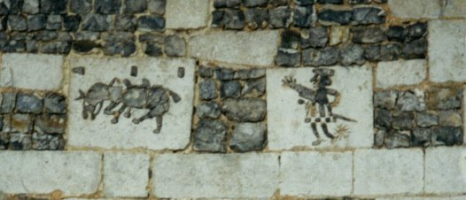
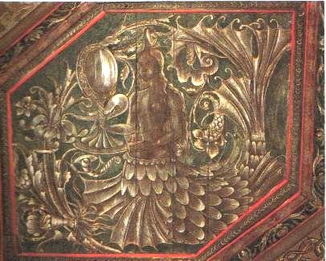
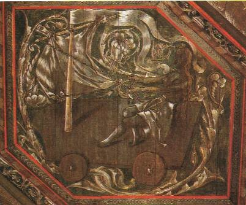
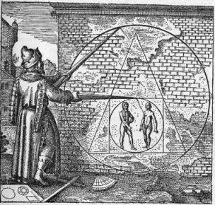
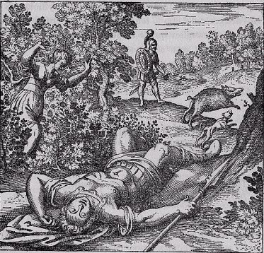
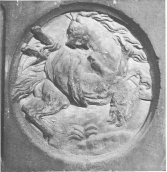
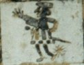
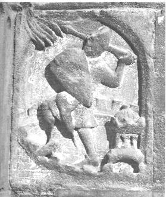
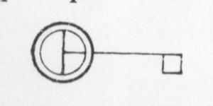
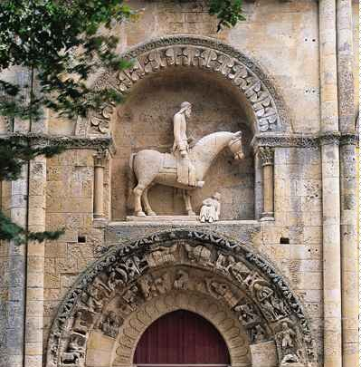
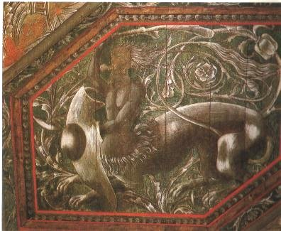
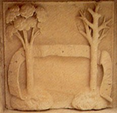
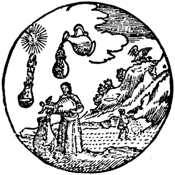
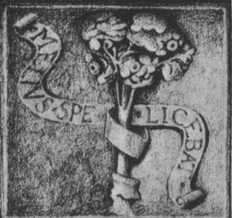
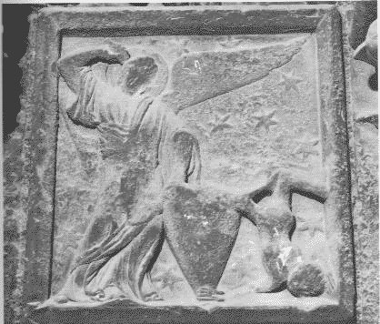
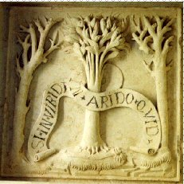
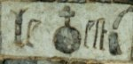
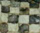
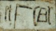
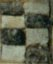
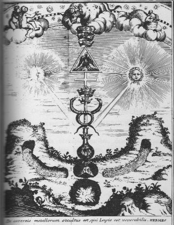
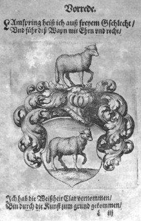
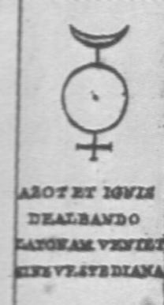
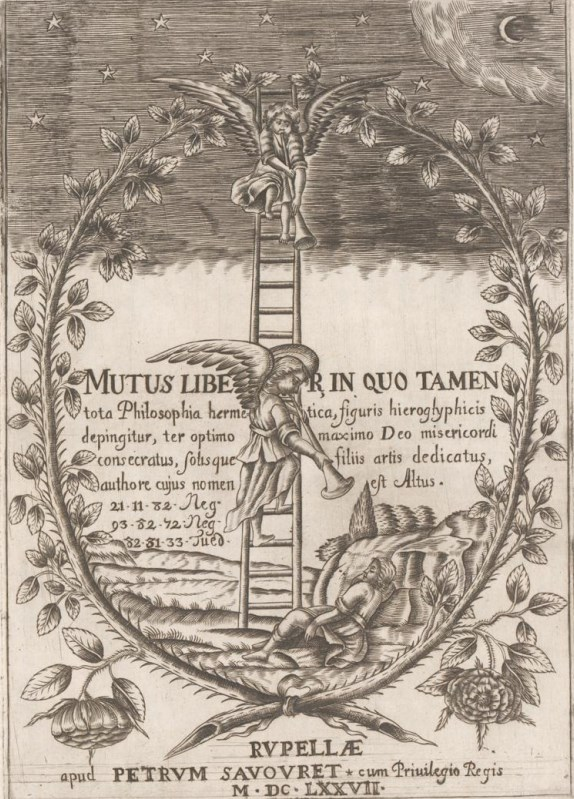
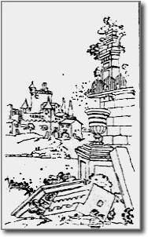
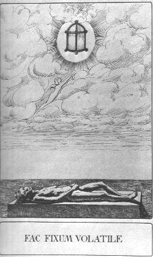
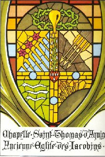
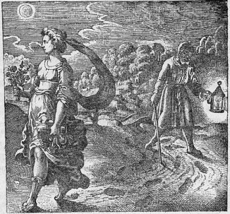
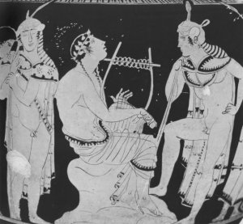
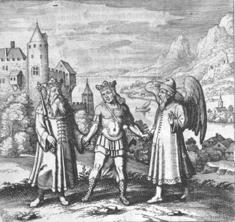
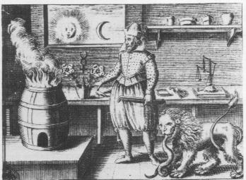
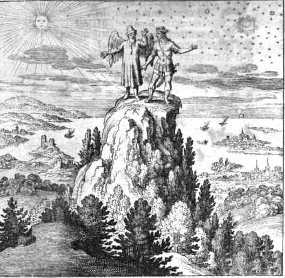
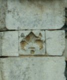
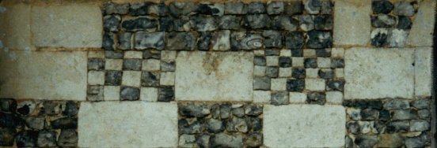
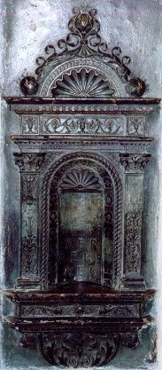
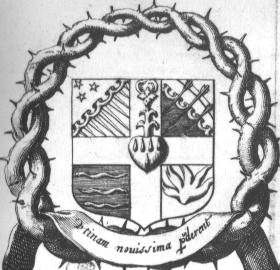
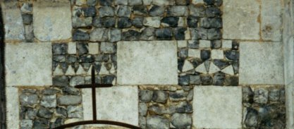
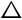
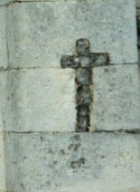
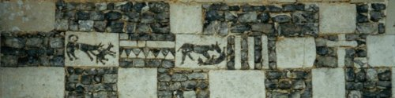
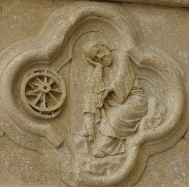
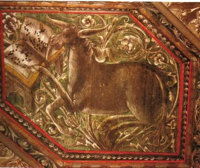
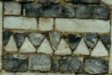
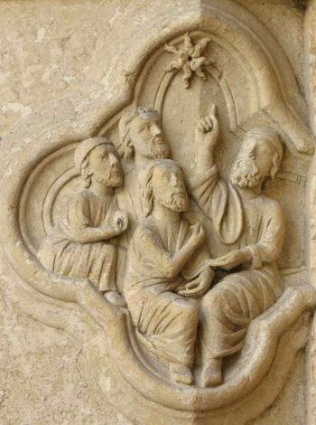
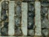
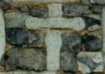
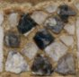
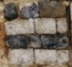
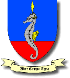
Noms cités
Fulcanelli · Paris · Hermes · Jean · Venus · Atalanta · Saturne · Jupiter · Jung · Valentin · Newton · Canseliet · Pernety · Flamel